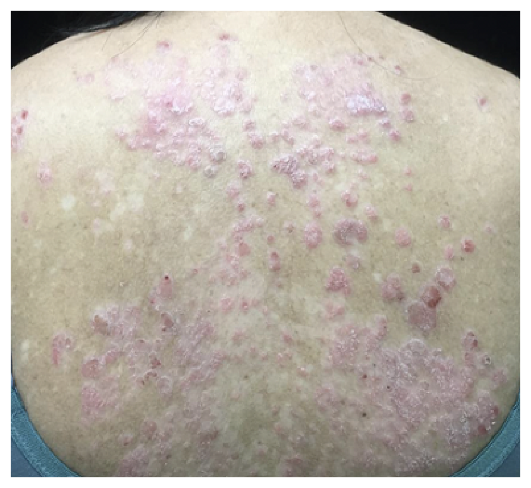
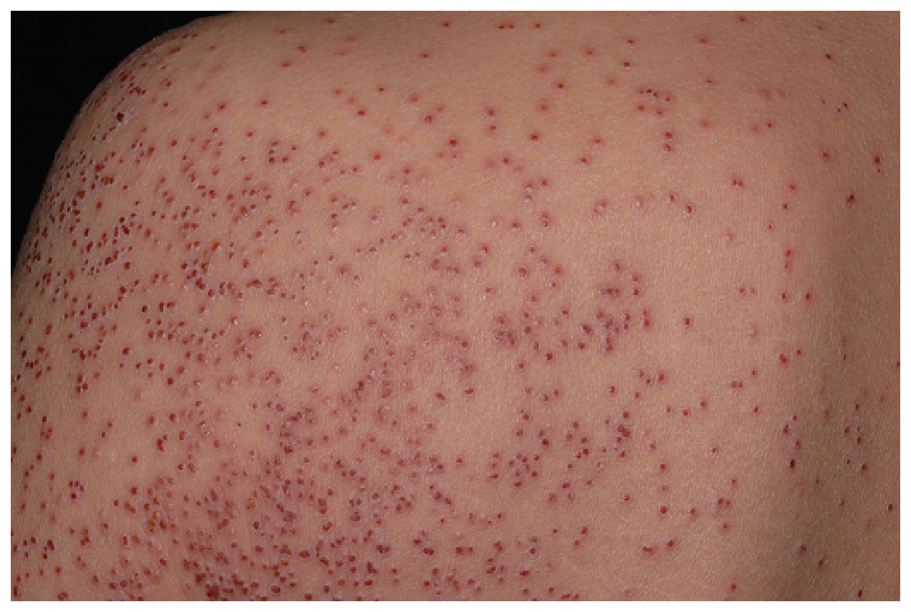
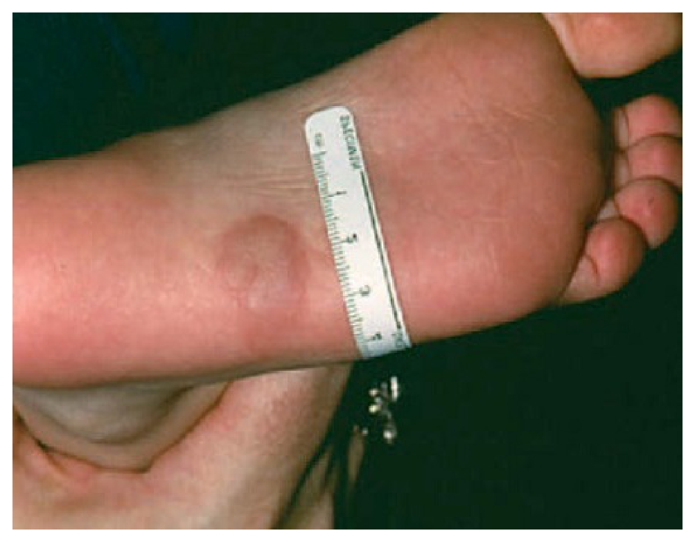
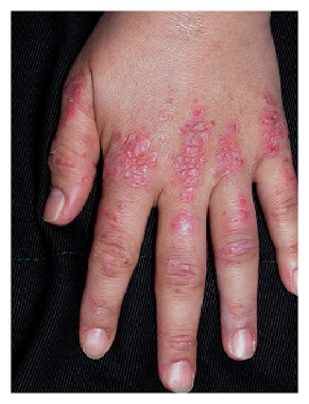
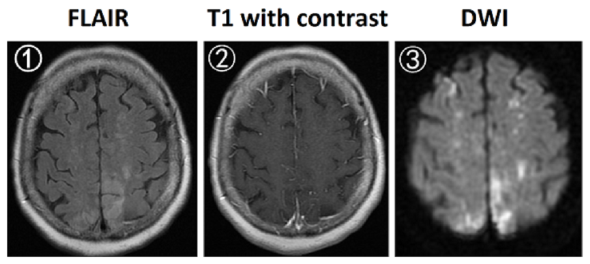
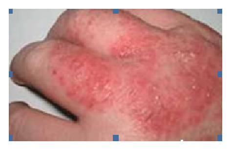

開卷有益 ／
醫師 ／ 醫學（四）（包括小兒科、皮膚科、神經科、精神科等科目及其相關臨床實例與醫學倫理） ／ 113 年第 2 次113 年第 2 次醫師醫學（四）（包括小兒科、皮膚科、神經科、精神科等科目及其相關臨床實例與醫學倫理）試題與答案
這一頁是民國 113 年第 2 次醫師醫學（四）（包括小兒科、皮膚科、神經科、精神科等科目及其相關臨床實例與醫學倫理）的整份歷屆試題，共 80 題，題目與標準答案出自考選部「國家考試試題及測驗式試題答案」開放資料，其中 80 題附有詳解。以下逐題列出題幹、選項與答案；要計時作答或記錄成績，請用線上練習。
考選部原始場次代碼：113070
線上作答這一科 →
全部 80 題
第 1 題
一歲半的孩子，下列何項描述最可能代表有發展遲緩，需要進一步轉介？
（A） 僅能說出身體4個部位（B） 僅能說2個有意義的單字（C） 僅能說1種顏色（D） 僅能指認3種動物答案：（B）
詳解與考點 正解：一歲半幼兒的語言里程碑。此年齡應已有數個有意義單字並持續擴增詞彙；僅能說 2 個有意義單字提示表達性語言明顯落後，應進一步發展評估與轉介，故選 B。
A：能說出 4 個身體部位屬理解與表達發展的一部分，單憑此項不足以作為最明確的發展遲緩警訊。
C：顏色命名較依賴後續語言與認知發展，一歲半僅能說 1 種顏色不能單獨判定發展遲緩。
D：能指認 3 種動物反映接受性語言與認知能力，並非本題最需立即轉介的異常描述。
本題考點：發展監測（developmental surveillance）須依年齡判讀語言、認知、動作與社會互動；一歲半語言表達明顯不足是語言遲緩（language delay）警訊；發現警訊後應做發展篩檢與早期轉介。
第 2 題
依照我國兒童健康手冊規定，嬰幼兒輸注血液製劑後，需與活性減毒疫苗接種有所間隔。下列關於間隔之建議，何者最不適當？
（A） 注射呼吸道融合病毒（RSV）預防性單株抗體（palivizumab），應間隔3個月（B） 接受高劑量（≧1g/kg）免疫球蛋白靜脈注射後，應間隔11個月（C） 輸過血或接受靜脈血液製品者，應間隔6個月。但輸注的若為洗滌紅血球則無需間隔（D） 一般肌肉注射免疫球蛋白或B型肝炎免疫球蛋白，應間隔3個月答案：（A）
詳解與考點 正解：輸注血液製劑後接種活性減毒疫苗的間隔，主要擔心製劑中的抗體中和疫苗病毒。palivizumab 是針對 RSV 的單株抗體，並不會像含多種抗體的免疫球蛋白或血液製劑那樣干擾活性減毒疫苗；（A）要求間隔 3 個月最不適當，故選 A。
B：高劑量靜脈免疫球蛋白含有較多被動抗體，可能較久干擾活性減毒疫苗反應，間隔 11 個月的建議適當。
C：輸血或靜脈血液製品可能帶入抗體而干擾疫苗；洗滌紅血球去除大部分血漿成分，通常無此間隔需求，敘述適當。
D：一般肌肉注射免疫球蛋白或 B 型肝炎免疫球蛋白後，需保留適當間隔再接種活性減毒疫苗，間隔 3 個月的建議適當。
本題考點：被動抗體（passive antibody）可干擾活性減毒疫苗（live attenuated vaccine）的免疫反應；免疫球蛋白（immunoglobulin）劑量與血液製劑種類會影響間隔；RSV 預防性單株抗體 palivizumab 不屬造成此類干擾的多株抗體製劑。
第 3 題
下列關於胎便吸入（meconium aspiration）之敘述，何者最為適當？
（A） 羊水胎便染色（meconium-stained amniotic fluid）多發生於早產兒（B） 有羊水胎便染色之新生兒，約有60%發生胎便吸入症候群（meconium aspiration syndrome）（C） 胎便吸入症候群會增加新生兒持續性肺高壓症（persistent pulmonary hypertension of newborn）發生機會（D） 有胎便吸入症候群之新生兒，表現以呼吸道阻塞為主，容易造成肺塌陷，不會增加氣胸機率答案：（C）
詳解與考點 正解：胎便吸入症候群的肺部併發症。胎便造成氣道阻塞、化學性肺炎與肺血管收縮，缺氧及肺血管阻力上升可誘發或加重新生兒持續性肺高壓症（persistent pulmonary hypertension of newborn），故選 C。
A：羊水胎便染色較常見於足月或過期妊娠；早產兒排出胎便較少，故此敘述不適當。
B：羊水胎便染色不等於胎便吸入症候群，只有少數染色新生兒會發展為症候群，不能說約 60% 都發生。
D：胎便可形成球閥式阻塞，部分肺區過度充氣而增加氣漏、氣胸風險；它看似把阻塞與肺塌陷連在一起，但漏掉過度膨脹這一重要機轉。
本題考點：胎便吸入症候群（meconium aspiration syndrome）可造成氣道阻塞、化學性肺炎及氣漏；新生兒持續性肺高壓症（persistent pulmonary hypertension of newborn）是其重要嚴重併發症。
第 4 題
下列關於新生兒常規照護（routine newborn care）及評估的敘述，何者最不適當？
（A） 肌肉注射vitamin K1以預防新生兒出血性疾病（B） 給與tetracycline眼藥膏以對抗gonococcal ophthalmia neonatorum（C） 正常足月新生兒呼吸速率約為每分鐘30～60次（D） Ortolani test是測試髖關節是否滑脫（unstable hip dislocating from the acetabulum）答案：（D）
詳解與考點 正解：題目問最不適當者，關鍵在 Ortolani test 的動作與目的。Ortolani test 是將已脫位的股骨頭外展、上提，使其復位入髖臼的檢查；測試髖關節是否可由髖臼滑脫的是 Barlow test，故錯誤敘述為 D。
A：新生兒常規肌肉注射 vitamin K1 可預防維生素 K 缺乏性出血（vitamin K deficiency bleeding），屬適當照護。
B：眼部預防處置用於降低淋球菌性新生兒眼炎（gonococcal ophthalmia neonatorum）風險，敘述方向正確。
C：正常足月新生兒安靜時呼吸速率約為每分鐘 30～60 次，屬常規生命徵象評估範圍。
本題考點：發育性髖關節發育不良（developmental dysplasia of the hip）的理學檢查——Barlow test 測試可否誘發脫位；Ortolani test 偵測脫位股骨頭能否復位。
第 5 題
下列關於糖尿病母親所生嬰兒（infant of diabetic mothers）的敘述，何者最不適當？
（A） 約36～45%為large for gestational age（LGA），若有LGA，則產傷（birth trauma）及生產窒息（birthasphyxia）風險較高（B） 可能造成紅血球增多症（polycythemia），發生高膽紅素血症（hyperbilirubinemia）的機率也會上升（C） 可能有心臟擴大（cardiomegaly）及心室中隔肥厚（interventricular septal hypertrophy）（D） 出生後容易有低血糖（hypoglycemia）、高血鈣（hypercalcemia），並且經常表現出肌張力低下、昏睡、吸吮力差等症狀答案：（D）
詳解與考點 正解：題目問糖尿病母親嬰兒最不適當的併發症組合。母體高血糖使胎兒胰島素分泌增加，出生後母體葡萄糖供應突然中斷，容易低血糖；但常見電解質問題是低血鈣（hypocalcemia），不是高血鈣，故選 D。
A：胎兒高胰島素血症具促生長作用，糖尿病母親嬰兒常為大於胎齡兒（large for gestational age），因而增加難產、產傷及窒息風險。
B：慢性胎兒缺氧可促進紅血球生成，紅血球增多後的分解也會提高高膽紅素血症風險，敘述正確。
C：高胰島素血症可造成心肌肥厚，常見室間隔肥厚與心臟擴大，故為合理併發症。
本題考點：糖尿病母親嬰兒（infant of diabetic mother）的胎兒高胰島素血症，可導致大於胎齡兒、出生後低血糖、心肌肥厚、紅血球增多及低血鈣；須區分低血鈣與高血鈣。
第 6 題
3個月大的足月產男嬰，出生體重為3058公克，目前體重為4075公克，奶量為每四小時70 c.c.，身體診察有聽到心雜音。此病人最不可能的診斷為下列何項？
（A） 第二型心房中隔缺損（atrial septal defect, ASD type 2），缺損為5 mm（B） 第二型心室中隔缺損（ventricular septal defect, VSD type 2），缺損為6 mm（C） 完全型心內膜墊缺損（complete endocardial cushion defect, ECD），缺損為6 mm（D） 開放性動脈導管管狀型（tubular type patent ductus arteriosus, PDA），直徑為5 mm答案：（A）
詳解與考點 正解：3 個月大嬰兒體重增加不足，且奶量偏少、已有心雜音，提示有症狀的左向右分流造成心衰竭與餵食困難。5 mm 的第二型心房中隔缺損通常在嬰兒期分流量較小，較少在此年齡造成明顯生長遲滯，故最不可能是 A。
B：6 mm 心室中隔缺損可造成明顯左向右分流；肺血流增加會使嬰兒呼吸費力、餵食困難及體重增加不佳，符合情境。
C：完全型心內膜墊缺損常有較大的心房與心室層級分流，嬰兒期即可出現心衰竭與生長不良，不能排除。
D：5 mm 管狀開放性動脈導管可形成顯著左向右分流，也可能造成心衰竭與體重增加不佳。
本題考點：先天性心臟病（congenital heart disease）的左向右分流，較大 VSD、PDA 或完全型心內膜墊缺損可在嬰兒期造成肺血流增加及生長遲滯；第二型 ASD 常較晚才出現症狀。
第 7 題
關於開放性動脈導管（patent ductus arteriosus, PDA），下列敘述何者最不適當？
（A） 常見於早產兒（prematurity）（B） 身體診察常發現有較寬的脈搏壓（wide pulse pressure）（C） 可以使用prostaglandin類藥物促使其閉合（D） 可於左側近鎖骨部位聽到連續性心雜音（continuous murmur）或收縮性心雜音（systolic murmur）答案：（C）
詳解與考點 正解：題目問 PDA 最不適當的敘述。prostaglandin 會維持或重新開放動脈導管；促使 PDA 閉合的藥物是抑制前列腺素生成的藥物，而非 prostaglandin 類藥物本身，故選 C。
A：PDA 在早產兒較常見，因動脈導管平滑肌對出生後氧氣上升的收縮反應較不成熟。
B：持續左向右分流使舒張期血液回流肺循環，可造成舒張壓下降及較寬脈搏壓，為典型理學線索。
D：PDA 可在左上胸或左鎖骨下區聽到連續性機械樣雜音；小嬰兒或分流型態不同時也可能僅聽到收縮期雜音。
本題考點：開放性動脈導管（patent ductus arteriosus）是主動脈至肺動脈的左向右分流；prostaglandin 促使導管保持開放，抑制前列腺素合成才有助導管閉合。
第 8 題
下列何項系統疾病為兒童次發性高血壓（secondary hypertension）最常見的原因？
（A） 心血管系統（cardiovascular system）（B） 腎臟系統（renal system）（C） 內分泌系統（endocrine system）（D） 中樞神經系統（central nervous system）答案：（B）
詳解與考點 正解：兒童若有次發性高血壓，最常見的系統性來源是腎臟系統（renal system）。腎實質疾病、腎血管疾病與腎臟相關的容量或腎素調節異常都可升高血壓，故選 B。
A：心血管病變如主動脈縮窄可造成高血壓，但整體上不是兒童次發性高血壓最常見來源。
C：內分泌疾病可導致高血壓，但相對少見；它看似合理是因許多激素確會影響血壓，然而盛行率不及腎臟病因。
D：中樞神經系統病變也可能經顱內壓或自主神經影響血壓，並非最常見原因。
本題考點：兒童次發性高血壓（secondary hypertension）應優先評估腎臟與腎血管病因；心血管、內分泌及中樞神經系統病因為後續鑑別。
第 9 題
關於病毒性肝炎血清學檢查結果的判讀，下列何者最適當？
（A） Anti-HAV IgM(+)表示A型肝炎病毒的急性感染（B） Anti-HBsAg(+)，Anti-HBc IgG(+)是接種B型肝炎疫苗後的反應（C） Anti-HCV(+)表示過去曾感染C型肝炎病毒，但已痊癒（D） Anti-HBc IgM(+)，HBs Ag(+)，Anti-HBs(-)表示B型肝炎病毒的慢性感染答案：（A）
詳解與考點 正解：Anti-HAV IgM 是 A 型肝炎病毒近期或急性感染的血清學標記，因此（A）正確，故選 A。
B：接種 B 型肝炎疫苗後的典型反應是 anti-HBs 陽性而 anti-HBc 陰性；anti-HBc IgG 陽性代表曾自然感染過 B 型肝炎病毒，故此配對錯誤。
C：anti-HCV 陽性只表示曾暴露於 C 型肝炎病毒，不能單靠它判定已痊癒；是否有現症感染須以 HCV RNA 等病毒學檢驗確認。
D：HBsAg 與 anti-HBc IgM 同時陽性較支持急性或近期 B 型肝炎感染，不能據此稱為慢性感染；慢性與否要看 HBsAg 持續存在的時間。
本題考點：病毒性肝炎血清學（viral hepatitis serology）——anti-HAV IgM 指向急性 A 型肝炎；B 肝疫苗不產生 anti-HBc；anti-HCV 不能單獨區分已清除與現症感染。
第 10 題
有關孩童食道異物的敘述，下列何者最不適當？
（A） 吞入鈕扣型電池須等待禁食時間足夠後，才能取出（B） 誤吞異物最常見的是硬幣（C） 至少30%孩童食道異物完全沒有任何症狀（D） 誤吞異物的檢查以胸頸、腹部X光為先答案：（A）
詳解與考點 正解：題目問最不適當的兒童食道異物處置。鈕扣型電池嵌在食道可快速造成壓迫、電流與鹼性損傷，應緊急取出，不應為等待禁食時間而延後，故選 A。
B：兒童誤吞異物中硬幣很常見，是典型的食道異物。
C：部分兒童即使食道內有異物仍無明顯症狀，不能以無症狀排除異物。
D：懷疑吞入異物時，胸頸部及腹部 X 光可協助定位放射不透光物、判斷其方向及確認是否進入胃腸道，為適當初步評估。
本題考點：兒童食道異物（esophageal foreign body）中，鈕扣型電池嵌頓屬緊急狀況；異物評估常以頸部、胸部及腹部 X 光定位，且無症狀不能排除。
第 11 題
下列何者最不可能合併hydrops of the gallbladder？
（A） 川崎氏症（Kawasaki disease）（B） 鏈球菌咽炎（streptococcal pharyngitis）（C） 肥胖（obesity）（D） 全靜脈營養（total parenteral nutrition）本題送分，無標準答案
詳解與考點 本題經考選部公告一律給分。作答任一選項皆得分。原因是 hydrops of the gallbladder 可指阻塞性膽囊擴張，也可被用於系統性疾病中的非結石性膽囊擴張，題幹沒有界定術語與比較基準。（A）川崎氏症、（D）全靜脈營養與膽囊鬱滯有明確關聯；（B）感染性疾病及（C）肥胖也可分別經全身發炎或膽石風險與膽囊擴張相連。何者「最不可能」會隨採用的定義而變動，公告所採判準仍有不確定性，故送分。
A：川崎氏症可合併膽囊水腫或非結石性膽囊炎，是兒科系統性血管炎的已知腹部表現之一。
B：單純鏈球菌咽炎不是膽囊水腫的典型關聯；不能以一般感染的全身發炎，建立 streptococcal pharyngitis 與 hydrops of the gallbladder 的特異性關聯。
C：肥胖不是膽囊水腫（hydrops/mucocele）的專一病因；提高膽石風險不等同非結石性膽囊炎，不能直接建立膽囊水腫關聯。
D：全靜脈營養可造成膽囊鬱滯與膽泥，並增加非結石性膽囊病變的風險，因此不宜視為最不可能的選項。
本題考點：膽囊水腫（hydrops of the gallbladder）；非結石性膽囊炎（acalculous cholecystitis）；膽汁鬱滯（biliary stasis）。遇到「最不可能」題型，要先確認名詞是指阻塞性擴張還是發炎性膽囊病變，兩種定義的關聯因子不同。
第 12 題
下列有關兒童夜尿（nocturnal enuresis）的敘述，何者最不適當？
（A） 男生的發生率高於女生（B） 須排除其他造成夜尿的可能原因（C） 診斷定義為4歲以上仍有夜間不自覺排尿（D） 有家族或遺傳傾向答案：（C）
詳解與考點 正解：題目問兒童夜尿最不適當的診斷敘述。夜尿症（nocturnal enuresis）通常以發展年齡至少 5 歲、在睡眠中反覆不自主排尿作為診斷門檻；4 歲仍可能屬排尿控制發展過程，故選 C。
A：夜尿症在男童的發生率較高，敘述正確。
B：診斷前應排除泌尿道感染、糖尿病、便祕、睡眠障礙及神經性膀胱等次發原因，故為適當評估。
D：夜尿症具有明顯家族聚集與遺傳傾向，敘述正確。
本題考點：夜尿症（nocturnal enuresis）的診斷以 5 歲以上反覆夜間不自主排尿為原則；須辨別原發性夜尿與泌尿、代謝或神經疾病引起的次發性夜尿。
第 13 題
關於兒童紫斑性腎炎（Henoch-Schönlein purpura nephritis），下列敘述何者最不適當？
（A） 腎臟切片的適應症包括：每日尿中蛋白質流失大於1克、高血壓、腎功能惡化（B） 約50%的兒童紫斑症會侵犯腎臟，其腎臟的病理變化幾乎與IgA腎病變相同，無法區分（C） 出現紫斑的初期立即使用類固醇，可以預防日後腎炎的發生或減輕其嚴重度（D） 大多數起始表現為血尿合併輕微蛋白尿或無蛋白尿，無需治療而自動痊癒答案：（C）
詳解與考點 正解：題目問紫斑性腎炎最不適當的敘述。類固醇可用於某些嚴重腸胃、關節或腎臟表現的治療，但在紫斑初期例行給予並不能可靠預防日後腎炎發生或降低其嚴重度，故選 C。
A：持續明顯蛋白尿、高血壓或腎功能惡化提示腎臟受累較重，可作為考慮腎切片的臨床條件。
B：IgA 血管炎腎炎的腎臟病理以 IgA 沉積為特徵，與 IgA 腎病變非常相似；此選項以「無法區分」描述病理相似性，非本題主要錯誤。
D：多數兒童的腎臟受累較輕，常見血尿伴輕微或無蛋白尿，許多病例可自行緩解，但仍須追蹤血壓、尿液與腎功能。
本題考點：IgA 血管炎腎炎（IgA vasculitis nephritis，舊稱 Henoch-Schönlein purpura nephritis）常有血尿及蛋白尿；類固醇並非預防腎炎的常規策略；腎切片用於嚴重或持續腎臟受累的評估。
第 14 題
10歲的男孩血尿兩年，家族史發現舅舅正接受洗腎治療，而且有雙側聽力障礙及圓錐形晶狀體（anteriorlenticonus）。下列何者是最可能的診斷？
（A） IgA nephropathy（B） thin basement membrane disease（C） Alport syndrome（D） focal segmental glomerulosclerosis答案：（C）
詳解與考點 正解：持續血尿合併男性親屬腎衰竭、感音性聽力障礙及前圓錐晶狀體（anterior lenticonus），是 Alport syndrome 的典型組合。此病與第四型膠原蛋白異常相關，會同時影響腎絲球基底膜、內耳與眼睛，故選 C。
A：IgA nephropathy 可造成反覆血尿，但無法典型解釋家族中的聽力障礙與前圓錐晶狀體。
B：thin basement membrane disease 常見家族性單純血尿，腎功能預後多良好，通常不伴隨耳與眼的典型病變。
D：focal segmental glomerulosclerosis 常以蛋白尿、腎病症候群或腎功能惡化表現，與本題耳、眼聯合線索不符。
本題考點：Alport syndrome 是第四型膠原蛋白（type IV collagen）相關腎病，典型為遺傳性血尿、感音性聽力障礙及眼部異常，如前圓錐晶狀體。
第 15 題
兒童異位性皮膚炎（atopic dermatitis）的皮膚症狀，最少出現下列何種表徵？
（A） 搔癢（pruritus）（B） 脫屑（scaling）（C） 苔癬化（lichenification）（D） 風疹塊（wheal）答案：（D）
詳解與考點 正解：異位性皮膚炎的核心是搔癢性濕疹樣皮疹；慢性反覆搔抓可見脫屑與苔癬化。風疹塊（wheal）是蕁麻疹的短暫水腫性皮疹，最少見於異位性皮膚炎，故選 D。
A：搔癢是異位性皮膚炎最重要的症狀之一，常導致搔抓與睡眠受影響。
B：皮膚屏障受損及發炎可造成乾燥、粗糙與脫屑，為常見表徵。
C：慢性搔抓造成皮紋加深、皮膚增厚的苔癬化，是慢性異位性皮膚炎常見變化。
本題考點：異位性皮膚炎（atopic dermatitis）常見搔癢、濕疹樣皮疹、乾燥脫屑及苔癬化；蕁麻疹（urticaria）的風疹塊是不同型態的瞬時皮疹。
第 16 題
下列何種自體抗體（autoantibody）是紅斑性狼瘡（systemic lupus erythematosus, SLE）的特異性抗體，與疾病的活動性（activity）及是否併發腎絲球腎炎（lupus nephritis）最有相關？
（A） anti-SSA 及anti-SSB antibody（B） anti-centromere antibody（C） anti-dsDNA antibody（D） anti-Smith antibody答案：（C）
詳解與考點 正解：題幹同時問 SLE 特異性、疾病活動性與狼瘡腎炎的相關性。anti-dsDNA antibody 具高度特異性，其效價變化常與疾病活動及腎絲球腎炎相關，故選 C。
A：anti-SSA 與 anti-SSB 可見於 Sjögren syndrome 與部分 SLE，亦和新生兒狼瘡等相關，但不如 anti-dsDNA 用於反映狼瘡腎炎活動性。
B：anti-centromere antibody 主要與侷限型皮膚系統性硬化症相關，非 SLE 的典型特異性抗體。
D：anti-Smith antibody 對 SLE 具高度特異性，因此看似很有競爭力；但其抗體效價通常不如 anti-dsDNA 與疾病活動性及狼瘡腎炎變化平行。
本題考點：系統性紅斑性狼瘡（systemic lupus erythematosus）的 anti-dsDNA antibody 具高特異性，並可作為狼瘡腎炎（lupus nephritis）活動度的血清學線索；anti-Smith antibody 雖特異但不適合追蹤活動度。
第 17 題
有關兒童特發性關節炎（juvenile idiopathic arthritis, JIA）的敘述，下列何者最不適當？
（A） 發病於小於16歲的兒童（B） 關節炎的症狀要持續6週以上（C） 最常見的JIA類型是少關節炎型（oligoarthritis）（D） 疾病開始的6週內少於或等於5個關節發炎，屬於少關節炎型（oligoarthritis）本題送分，無標準答案
詳解與考點 本題經考選部公告一律給分。作答任一選項皆得分。原因是（D）把少關節炎型的判定寫成病程首 6 週內少於或等於 5 個關節，與常用分類的病程前 6 個月受累 1 至 4 個關節不合；（A）至（C）則近乎通用定義。從題幹看（D）似乎是唯一不當選項，但公告採用的分類版本或勘誤爭點沒有呈現，無法判定送分屬甲型或乙型，判讀仍有不確定性，故送分。
A：JIA 的發病年齡定義為 16 歲前，故發病於小於 16 歲兒童的敘述符合基本年齡條件。
B：關節炎必須持續至少 6 週，才能和短暫感染後關節症狀等情況區分，這是 JIA 定義的重要時間條件。
C：少關節炎型在兒童 JIA 中常被視為最常見的類型，此敘述本身沒有分類錯置。
D：少關節炎型不是以首 6 週及少於或等於 5 個關節定義；常用判準是病程前 6 個月受累 1 至 4 個關節，5 個以上則進入多關節炎的分類範圍。
本題考點：兒童特發性關節炎（juvenile idiopathic arthritis, JIA）；少關節炎型（oligoarthritis）；疾病分類（disease classification）。分類題要逐一核對年齡、持續時間、觀察期間與關節數，四者任一改動都可能改變類型。
第 18 題
關於兒童骨腫瘤（bone tumor），下列敘述何者最不適當？
（A） 骨肉瘤（osteosarcoma）好發於急速生長的青少年，罹病個案的身高一般屬同齡層中較高者（B） 帶有RB1基因生殖細胞系突變（germline RB1 gene mutation）的孩子，罹患骨肉瘤的機率較同齡層高（C） 10歲以下兒童的骨腫瘤，伊文氏肉瘤（Ewing sarcoma）的發生率較骨肉瘤高（D） 長骨幹骺處（metaphyses of long bone）是伊文氏肉瘤（Ewing sarcoma）的好發位置本題送分，無標準答案
詳解與考點 本題經考選部公告一律給分。伊文氏肉瘤好發部位傳統教材主張為長骨骨幹（diaphysis），(D)稱好發於幹骺端（metaphyses）與此相悖，理應為「最不適當」之答案；惟(C)所述10歲以下兒童伊文氏肉瘤發生率高於骨肉瘤，部分流行病學資料顯示骨肉瘤仍略佔多數或年齡分布重疊，何者「最不適當」因而生爭議。(A)骨肉瘤好發身高較高之急速生長青少年、(B)RB1生殖細胞系突變增加骨肉瘤風險，皆為公認敘述，可先排除。作答以現行小兒骨腫瘤好發部位與流行病學教材為準。
第 19 題
關於兒童癌症與其常見臨床症狀的敘述，下列何者最不適當？
（A） 白血病：臉色蒼白、身上多處瘀青或出血點、發燒等（B） 神經母細胞瘤：肢體疼痛、貧血、浣熊眼等（C） 視網膜母細胞瘤：白瞳、斜視、視力下降等（D） 肝母細胞瘤：腹部腫塊、血尿、高血壓等答案：（D）
詳解與考點 正解：題目問兒童癌症與症狀配對最不適當者。肝母細胞瘤最典型是無痛性腹部腫塊，可有腹脹、食慾下降等；血尿與高血壓較符合腎臟腫瘤如 Wilms tumor 的線索，故選 D。
A：白血病的骨髓衰竭可造成貧血而臉色蒼白、血小板低下而瘀青或出血點，以及感染相關發燒，配對正確。
B：神經母細胞瘤可侵犯骨髓或骨骼造成肢體疼痛與貧血，眼眶轉移可出現浣熊眼，為典型警訊。
C：視網膜母細胞瘤常以白瞳（leukocoria）、斜視或視力異常表現，配對正確。
本題考點：兒童腫瘤（pediatric malignancy）的線索配對——神經母細胞瘤可有浣熊眼；視網膜母細胞瘤可有白瞳；肝母細胞瘤以腹部腫塊為主，血尿與高血壓較提示 Wilms tumor。
第 20 題
關於兒童癌症診斷時的相對應檢查，下列何者最不適當？
（A） 肝母細胞瘤：human chorionic gonadotropin（hCG）（B） 生殖細胞瘤：α-Fetoprotein（AFP）（C） 神經母細胞瘤：尿液vanillylmandelic acid（VMA）（D） 急性淋巴性白血病：骨髓細胞遺傳學（染色體）檢查答案：（A）
詳解與考點 正解：題目問腫瘤與診斷檢查最不適當的配對。肝母細胞瘤常用的腫瘤標記是 alpha-fetoprotein（AFP），不是 human chorionic gonadotropin（hCG），故選 A。
B：生殖細胞瘤可分泌 AFP，AFP 可作為其評估與追蹤的腫瘤標記之一。
C：神經母細胞瘤常測定尿液兒茶酚胺代謝物，如 vanillylmandelic acid（VMA），敘述正確。
D：急性淋巴性白血病須進行骨髓及細胞遺傳學檢查，以協助風險分層與治療規劃，配對正確。
本題考點：兒童腫瘤標記（tumor markers）——肝母細胞瘤常見 AFP 上升；神經母細胞瘤可檢測尿液 VMA；hCG 較與部分生殖細胞腫瘤相關。
第 21 題
2歲女童，發燒4天，精神活力差，血壓65/35 mmHg，心跳每分鐘165下。下列何者是其最不可能的臨床表現？
（A） 膚色呈網狀紋路（mottling）（B） 呼吸暫停（apnea）（C） 腸道蠕動增快（D） 尿量明顯減少答案：（C）
詳解與考點 正解：發燒、精神差、血壓 65/35 mmHg 與心跳每分鐘 165 下，提示兒童失代償性休克。休克時交感神經與腎素－血管張力素系統使血流集中到重要器官，腸胃灌流與蠕動下降，因此最不可能是腸道蠕動增快，故選 C。
A：周邊灌流不良可造成皮膚冰冷、延遲微血管回填及網狀斑駁（mottling），是休克表現。
B：嚴重休克或敗血症可造成意識與呼吸控制受損，可能出現呼吸暫停，並非不可能。
D：腎臟低灌流會減少尿量，少尿是兒童休克的重要警訊。
本題考點：兒童休克（pediatric shock）的失代償期可見低血壓、心搏過速、皮膚斑駁與少尿；血流重分配使腸胃道灌流及蠕動下降。
第 22 題
兒童呼吸窘迫進行呼吸治療的一般原則，下列敘述何者最適當？
（A） 優先使用侵入性的正壓通氣模式（B） 若置放氣管內管，優先選擇有氣囊的（C） 兒童呼吸器通常不須使用氣流潮濕裝置（D） 為配合呼吸器使用，皆須使用肌肉鬆弛劑答案：（B）
詳解與考點 正解：題目問兒童呼吸窘迫進行呼吸治療的一般原則。若必須氣管插管，通常優先選擇適當大小的有氣囊氣管內管，因可改善密合、減少漏氣並利於有效通氣；只要監測氣囊壓力即可，故選 B。
A：兒童呼吸支持通常採逐步升級，能使用氧氣、高流量鼻導管或非侵入性通氣時，不會一開始就優先侵入性正壓通氣。
C：人工氣道會繞過上呼吸道的加溫加濕功能，呼吸器氣流通常需要適當潮濕與加溫，否則分泌物易乾稠。
D：肌肉鬆弛劑並非所有接受呼吸器的兒童都需要；它看似可改善人機不同步，但須個別衡量且可能掩蓋神經學評估或增加不良效應。
本題考點：兒童呼吸支持（pediatric respiratory support）採由非侵入性到侵入性之升級策略；有氣囊氣管內管（cuffed endotracheal tube）可安全使用於兒童；人工氣道通氣須重視加溫加濕。
第 23 題
高中男生與同學打籃球劇烈碰撞之後產生氣胸，血氧飽和濃度88%。有關其臨床表現，下列何者最為適當？
（A） 呼吸會呈現Cheyne-Stokes respiration（B） 胸痛程度通常與肺部塌陷嚴重度成正比（C） 可能有通氣與灌流差異現象（ventilation-perfusion mismatch）（D） 在X光影像上，氣管顯影會偏移向氣胸的同側肺部答案：（C）
詳解與考點 正解：外傷後氣胸合併血氧飽和濃度 88% 的關鍵，是患側肺泡通氣減少而肺血流未必同步下降，形成低通氣肺泡的通氣與灌流差異（ventilation-perfusion mismatch），因此可造成低血氧，故選 C。
A：Cheyne-Stokes respiration 是潮式呼吸，常見於中樞神經病變、心衰竭或高海拔等呼吸調控不穩定的情況，並非單純外傷性氣胸的典型呼吸型態。
B：氣胸疼痛主要來自壁層胸膜受刺激，疼痛強度不會與肺塌陷程度穩定成正比；小量氣胸也可能很痛，大量氣胸反而未必等比例加劇。
D：若氣胸造成縱膈偏移，尤其張力性氣胸時，氣管會被推向對側，而非偏向氣胸同側。
本題考點：氣胸（pneumothorax）可因患側肺通氣下降造成通氣灌流不均；張力性氣胸（tension pneumothorax）的壓力效應會使氣管與縱膈偏向對側。
第 24 題
關於先天性腎上腺增生症（congenital adrenal hyperplasia），下列敘述何者最適當？
（A） 21-羥化酶缺乏（21-hydroxylase deficiency）是造成此疾病的唯一原因（B） 若合併醛固酮缺乏（aldosterone deficiency），出生72小時內一定會發生失鹽危症（salt-losingcrisis）（C） 是46, XX女嬰有性發展障礙（disorders of sex development）最常見的原因（D） 強烈建議於懷第一胎時進行常規產前診斷（prenatal diagnosis）答案：（C）
詳解與考點 正解：46, XX 女嬰出現性別外生殖器男性化時，最常見的內分泌原因是先天性腎上腺增生症（congenital adrenal hyperplasia, CAH），其中又以 21-羥化酶缺乏最常見；腎上腺雄性素過多會造成女性胎兒外生殖器雄性化，故選 C。
A：21-羥化酶缺乏是 CAH 最常見原因，但不是唯一原因；其他類固醇生成酵素缺陷也可造成 CAH，因此「唯一」錯誤。
B：失鹽型 CAH 的醛固酮不足可導致低鈉、高鉀與脫水危象，但危象並非出生後 72 小時內「一定」發生；母體與胎盤在出生前後的影響及個別殘餘酵素活性都會影響發作時間。
D：產前診斷是已知高風險家族可考慮的遺傳諮詢與檢測措施，不能對每一位第一胎孕婦常規強烈建議。
本題考點：先天性腎上腺增生症（congenital adrenal hyperplasia）是 46, XX 性發展障礙（disorders of sex development）的常見原因；21-羥化酶缺乏（21-hydroxylase deficiency）最常見，卻非唯一病因。
第 25 題
關於兒童及青少年肥胖防治，下列敘述何者最不適當？
（A） 大於兩歲孩童身體質量指數（BMI）大於第95百分位定義為肥胖（B） 大於兩歲孩童身體質量指數（BMI）介於第85～95百分位定義為過重（C） 兒童時期肥胖的孩子，成人時期較容易產生代謝症候群（D） 兒童肥胖屬於慢性發炎的狀況，可以使用抗發炎藥物治療答案：（D）
詳解與考點 正解：題目問最不適當的兒童肥胖防治方式。兒童肥胖雖與慢性低度發炎及代謝風險相關，但治療核心是飲食、身體活動、睡眠與家庭行為介入；不能因有發炎特徵便以抗發炎藥物作為常規治療，故選 D。
A：大於 2 歲兒童以年齡與性別校正的 BMI 百分位評估，BMI 大於或等於第 95 百分位是肥胖的常用定義，敘述適當。
B：BMI 介於第 85 至未滿第 95 百分位通常歸為過重，這是兒童體位評估的常用分層，敘述適當。
C：兒童期肥胖常延續到成年，並增加日後胰島素阻抗、代謝症候群與心血管風險，故是正確的風險說明。
本題考點：兒童肥胖（pediatric obesity）以 BMI-for-age percentile 評估；肥胖管理（obesity management）以生活型態與家庭行為介入為主，而非將慢性低度發炎直接當作抗發炎藥物適應症。
第 26 題
1歲女童反覆高燒至40℃ 3天，退燒之後精神尚可，伴有輕微腹瀉。第4天後退燒但軀幹出現疹子，關於此疾病的敘述，下列何者最不適當？
（A） 最可能的診斷為roseola infantum（B） 最主要的致病原為human herpesvirus 8（C） 此疾病通常為自限性（self-limited）（D） 在uvulopalatoglossal junction處常可見Nagayama spots答案：（B）
詳解與考點 正解：嬰兒先高燒 3 天、退燒後才由軀幹出疹，是幼兒急疹（roseola infantum）的典型時序；其主要病原是 human herpesvirus 6，亦可為 human herpesvirus 7，而非 human herpesvirus 8，故最不適當的是 B。
A：幼兒急疹的典型表現正是高燒退後出現玫瑰色斑丘疹，常從軀幹開始，故此診斷適當。
C：免疫正常兒童的幼兒急疹通常會自行緩解，治療以退燒、補充水分等支持性處置為主，故敘述正確。
D：Nagayama spots 是軟顎與懸雍垂根部交界的紅色丘疹，可見於幼兒急疹，故不是本題答案。
本題考點：幼兒急疹（roseola infantum）多由 human herpesvirus 6/7 引起；辨識「高燒後退燒出疹」與 Nagayama spots，可與其他兒童發疹疾病區分。
第 27 題
目前認為下列何者最能減輕哮吼（viral croup）的症狀？
（A） 化痰藥（mucolytic agents）（B） 氣管擴張劑（bronchodilator）（C） 抗生素（antibiotics）（D） 類固醇（steroid）本題送分，無標準答案
詳解與考點 本題經考選部公告一律給分。作答任一選項皆得分。原因是（D）類固醇是病毒性哮吼的有效治療，但（B）「氣管擴張劑」的用語過寬：若指一般 beta2 bronchodilator，對上呼吸道黏膜水腫無效；若被廣義解作吸入 epinephrine 類緩解藥，則可改善中重度症狀。題幹沒有界定藥物類別，因而不只一個選項能被解作減輕症狀。這屬乙型爭議，故送分。
A：化痰藥不能處理聲門下黏膜水腫，也沒有作為病毒性哮吼常規治療的角色。
B：典型的 beta2 bronchodilator 主要作用於下呼吸道平滑肌，對哮吼的上呼吸道阻塞效果有限；但若用語涵蓋吸入 epinephrine，便可能被解作可短暫改善症狀。
C：哮吼通常由病毒引起，沒有細菌感染證據時，抗生素不會直接減輕其典型症狀。
D：類固醇可減少聲門下黏膜發炎與水腫，能縮短症狀與醫療需求，是哮吼治療的核心選項之一。
本題考點：病毒性哮吼（viral croup）；上呼吸道阻塞（upper airway obstruction）；吸入 epinephrine。治療分類要分清支氣管擴張與減少聲門下水腫的藥物作用，籠統藥名容易造成選項重疊。
第 28 題
3歲女孩，最近4天有輕微頭痛併有發燒達39℃，且有喉嚨痛、微咳、活力變差的症狀。身體診察發現頸部淋巴結腫大，扁桃腺有滲出物，且脾臟腫大。實驗室檢驗發現alanine aminotransferase（ALT）升高，下列何項檢驗對診斷最有幫助？
（A） 抗鏈球菌溶血素O抗體（antistreptolysin O, ASLO）（B） 抗A型肝炎的IgM（C） 肺炎鏈球菌尿液中抗原（D） 抗Epstein-Barr病毒的VCA-IgM答案：（D）
詳解與考點 正解：發燒、滲出性扁桃腺炎、頸部淋巴結腫大、脾腫大及 ALT 上升共同指向傳染性單核球增多症（infectious mononucleosis），最能支持近期 Epstein-Barr virus 感染的檢驗是 VCA-IgM，故選 D。
A：抗鏈球菌溶血素 O 抗體反映 A 群鏈球菌感染後的抗體反應，不能解釋脾腫大與肝功能異常；滲出性扁桃腺炎看似像鏈球菌感染，但本題的全身線索較符合 EBV。
B：A 型肝炎 IgM 可診斷急性 A 型肝炎，但無法以此完整解釋滲出性咽扁桃腺炎與頸部淋巴結腫大。
C：肺炎鏈球菌尿液抗原用於輔助診斷肺炎鏈球菌感染，與此例的單核球增多症候群不相符。
本題考點：傳染性單核球增多症（infectious mononucleosis）常見發燒、咽扁桃腺炎、淋巴結及脾腫大與肝酵素上升；EBV viral capsid antigen IgM（VCA-IgM）支持急性感染。
第 29 題
腦性麻痺的致病危險因子與盛行率的描述，下列何者最不適當？
（A） 腦性麻痺全球的盛行率有稍微上升（B） 大部分腦性麻痺的原因都是生產中的併發症所造成的（如產程中窒息）（C） 未開發國家生產併發症所造成腦性麻痺的比例，比開發國家高（D） 雙胞胎腦性麻痺的危險性會比單胞胎高答案：（B）
詳解與考點 正解：本題問最不適當的病因敘述。腦性麻痺（cerebral palsy）多與產前腦發育或腦傷、早產、感染及多重危險因子相關，不能把大部分病例歸因於生產中窒息等產程併發症，故選 B。
A：高所得地區的出生盛行率已有下降趨勢；低中所得地區資料不足以可靠推估全球趨勢，因此不能據此斷言全球盛行率稍微上升。此選項的口徑與年代仍可能影響題目比較。
C：醫療與周產期照護資源不足地區，生產相關併發症造成腦傷的比例較可能高於醫療資源充足地區，敘述合理。
D：雙胞胎與早產、低出生體重等危險因子較常並存，因此腦性麻痺風險通常高於單胞胎，敘述正確。
本題考點：腦性麻痺（cerebral palsy）是非進行性發育中腦部障礙造成的動作與姿勢異常；病因學以產前與早產相關因素為主，產程窒息僅是少數病例的原因；盛行率須區分地區與資料品質。
第 30 題
新生兒發現尾骶骨凹陷（sacral dimple），若僅合併下列何項特徵，則可先觀察，暫不需做核磁共振之影像學檢查？
（A） 皮膚發育不全（aplasia cutis）（B） 凹陷距肛門邊緣（anal verge）1.5公分（C） 凹陷處長有毛髮（D） 附近合併血管瘤答案：（B）
詳解與考點 正解：尾骶骨凹陷是否需進一步影像評估，要辨識是否為低風險的單純尾骶凹陷（simple sacral dimple）。凹陷距肛門邊緣 1.5 公分而未提示其他皮膚標記，位置接近肛門，較符合可先觀察的特徵，故選 B。
A：皮膚發育不全是可能合併隱性脊柱裂（occult spinal dysraphism）的非典型皮膚標記，不能僅觀察。
C：凹陷處毛髮增生是毛叢（hair tuft）警訊，可能提示脊髓栓係或其他脊柱發育異常，需要進一步評估。
D：附近血管瘤屬異常皮膚表徵，與單純尾骶凹陷不同，應考慮進一步影像檢查。
本題考點：單純尾骶凹陷（simple sacral dimple）多位於肛門附近且沒有其他皮膚異常；隱性脊柱裂（occult spinal dysraphism）的警訊包括毛叢、血管病灶與皮膚發育不全。
第 31 題
關於Dravet syndrome的敘述，下列何者最不適當？
（A） 誘發痙攣的體溫通常比熱性痙攣低（B） 開始發生痙攣的年紀比多數的熱性痙攣小（C） 疾病初期可能會出現局部熱性痙攣重積狀態（focal febrile status epilepticus）（D） 基因變異以CDKL5為主答案：（D）
詳解與考點 正解：Dravet syndrome 是嬰兒期開始、常由發燒誘發的嚴重癲癇性腦病變，最常見的致病基因是 SCN1A，而不是 CDKL5，故最不適當的是 D。
A：Dravet syndrome 的發作可由較低程度的體溫升高或溫度變化誘發，與一般熱性痙攣相比對發燒更敏感，敘述適當。
B：其首次痙攣常出現在嬰兒早期，發病年齡可早於多數典型熱性痙攣，敘述正確。
C：疾病早期可出現延長的單側或局部熱性痙攣，甚至局部熱性痙攣重積狀態，是重要臨床警訊。
本題考點：Dravet syndrome 常與 SCN1A 變異相關；其特徵包括嬰兒早發、發燒敏感及延長的局部或全身性痙攣（febrile status epilepticus）。
第 32 題
關於休克（shock）的敘述，下列何者最為適當？
（A） 低血壓是休克的早期表現（B） 張力型氣胸造成分布性休克（distributive shock）（C） 心搏過速是休克的早期表現（D） 過敏性反應造成阻塞性休克（obstructive shock）本題送分，無標準答案
詳解與考點 本題經考選部公告一律給分。作答任一選項皆得分。原因是題幹未限定休克類型、年齡與代償階段，卻要求一項「早期」表現。（C）心搏過速是典型代償性反應，但在神經性休克、使用抑制心率藥物或傳導異常時未必出現；（A）低血壓也會隨休克類型與進程而提前或延後。雖然（B）與（D）的分類錯誤明確，仍沒有可普遍適用的唯一敘述。這屬甲型爭議，且早期定義有不確定性，故送分。
A：在可代償的休克中，低血壓往往較晚才明顯；但不同病人與不同休克機轉的血壓變化不完全一致，因此不能只憑此句界定所有早期休克。
B：張力型氣胸阻礙靜脈回流與心臟充填，屬阻塞性休克，不是分布性休克。
C：心搏過速常是交感神經代償的早期表現，但它不是所有休克病人的必備徵象，故在未限定情境下不夠絕對。
D：過敏性反應造成血管擴張與微血管通透性增加，典型分類為分布性休克，不是阻塞性休克。
本題考點：休克（shock）；代償期（compensated shock）；休克分類（shock classification）。休克的早期判讀重點是灌流不足的整體表現，不能把單一生命徵象當成所有類型都適用的定義。
第 33 題
關於Gaucher disease type 1的敘述，下列何者最不適當？
（A） 猶太人發生率最高（B） 常以快速神經退化為初始表現（C） 是因為acid β-glucosidase酵素活性缺乏導致（D） 可以enzyme replacement therapy和bone marrow transplantation治療答案：（B）
詳解與考點 正解：Gaucher disease type 1 是非神經病變型（non-neuronopathic）的 Gaucher disease，常見脾腫大、貧血、血小板低下與骨病變，並不以快速神經退化為初始表現，故最不適當的是 B。
A：type 1 在 Ashkenazi Jewish 族群的盛行率特別高，敘述正確。
C：本病由 GBA1 相關的 acid β-glucosidase（glucocerebrosidase）活性缺乏所致，造成 glucocerebroside 在巨噬細胞累積，敘述正確。
D：酵素替代治療（enzyme replacement therapy）是 type 1 的重要治療方式；造血幹細胞移植曾是可採取的治療選項，但因風險與現有治療選擇通常不作為常規首選，故此敘述並非把 type 1 誤認為快速神經退化型。
本題考點：Gaucher disease 為溶小體儲積疾病（lysosomal storage disease）；type 1 是非神經病變型（non-neuronopathic），與會有顯著神經退化的 type 2、3 區分。
第 34 題
下列關於蕁麻疹（urticaria）的敘述，何者錯誤？
（A） 臨床上急性與慢性蕁麻疹的區分以六週做為分界（B） 蕁麻疹可能與血管性水腫（angioedema）一起出現（C） 與第一型過敏反應（type I hypersensitivity）相關（D） 慢性蕁麻疹的第一線治療為環孢素（cyclosporine）答案：（D）
詳解與考點 正解：慢性蕁麻疹（chronic urticaria）的第一線藥物是第二代 H1 抗組織胺；cyclosporine 是對抗組織胺等治療仍控制不佳時才考慮的後線免疫調節治療，故錯誤的是 D。
A：以症狀持續超過 6 週區分急性與慢性蕁麻疹，是臨床上的常用定義，敘述正確。
B：蕁麻疹可合併較深層組織腫脹的血管性水腫（angioedema），例如眼瞼或嘴唇腫脹，敘述正確。
C：急性蕁麻疹可與第一型過敏反應（type I hypersensitivity）的肥大細胞媒介物質釋放有關；慢性蕁麻疹則不必然由特定過敏原觸發，故不能據此把所有慢性病例都當成單一食物過敏。
本題考點：蕁麻疹（urticaria）以 6 週區分急、慢性；慢性蕁麻疹（chronic urticaria）第一線為第二代 H1 antihistamine，cyclosporine 為難治性病人的後線選擇。
第 35 題
50歲女性病患主訴如圖所示的皮疹發生於背部，頭皮，手肘及膝蓋處有十餘年時間，最有可能的診斷為何？

（A） 尋常性乾癬（psoriasis vulgaris）（B） 尋常性魚鱗癬（ichthyosis vulgaris）（C） 蕁麻疹（urticaria）（D） 玫瑰糠疹（pityriasis rosea）答案：（A）
詳解與考點 正解：皮疹為界線清楚的紅色丘疹與斑塊，表面覆有厚而乾燥的白色鱗屑；圖中背部可見多發、部分融合的鱗屑性斑塊。再配合病程長達十餘年，且頭皮、手肘與膝蓋等伸側為典型受累部位，最符合尋常性乾癬（psoriasis vulgaris），故選 A。
B：尋常性魚鱗癬（ichthyosis vulgaris）通常自兒童期開始，表現為四肢伸側與軀幹廣泛、細碎的乾燥多角形鱗屑，屈側相對保留；不會典型地形成圖中這種界線明顯、發紅且覆厚鱗屑的多發斑塊，也不以頭皮、肘膝斑塊為特徵。
C：蕁麻疹（urticaria）是短暫出現又消退的風團（wheal），單一皮疹多在24小時內消退，常伴搔癢；與本題十餘年的固定鱗屑性斑塊及圖示形態不符。
D：玫瑰糠疹（pityriasis rosea）多為自限性發疹，常先有母斑，之後軀幹出現沿皮膚紋理排列的橢圓形細鱗屑斑疹；其病程通常不是長年反覆，且肘膝伸側與頭皮受累並非典型分布。
本題考點：尋常性乾癬（psoriasis vulgaris）為慢性免疫介導性發炎皮膚病，典型為界線清楚的紅色斑塊覆銀白色鱗屑；分布常見於頭皮及手肘、膝蓋等伸側；須與短暫風團的蕁麻疹（urticaria）及自限性玫瑰糠疹（pityriasis rosea）區分。
第 36 題
過敏性接觸性皮膚炎（allergic contact dermatitis）和刺激性接觸性皮膚炎（irritant contactdermatitis）的比較，下列敘述何者正確？
（A） 前者比較常見（B） 後者比較嚴重（C） 前者需要先前的暴露以造成致敏（D） 後者可用貼膚試驗（patch testing）確診答案：（C）
詳解與考點 正解：過敏性接觸性皮膚炎（allergic contact dermatitis）是延遲型細胞媒介過敏反應，必須先經抗原暴露而致敏，之後再次接觸才引起皮膚炎，故選 C。
A：刺激性接觸性皮膚炎（irritant contact dermatitis）較常見，因為任何人反覆接觸足量刺激物皆可能發病；過敏性接觸性皮膚炎需特異性致敏，較不常見。
B：兩者嚴重度取決於刺激物、過敏原、劑量、暴露時間及個體狀態，不能概括稱刺激性者一定較嚴重。
D：貼膚試驗（patch testing）用於偵測過敏性接觸性皮膚炎的致敏原；刺激性皮膚炎沒有特異性免疫致敏，不能靠此試驗確診。
本題考點：過敏性接觸性皮膚炎（allergic contact dermatitis）是 type IV hypersensitivity，需先致敏且可用 patch testing 輔助；刺激性接觸性皮膚炎（irritant contact dermatitis）較常見且非特異性免疫反應。
第 37 題
下列那一個疾病和馬拉色菌（Malassezia）感染較無關係？
（A） 汗斑（pityriasis versicolor）（B） 新生兒頭部膿疱病（neonatal cephalic pustulosis）（C） 脂漏性皮膚炎（seborrheic dermatitis）（D） 凹陷性角質溶解症（pitted keratolysis）答案：（D）
詳解與考點 正解：凹陷性角質溶解症（pitted keratolysis）是足底角質層的細菌性感染，常與潮濕、多汗和鞋內悶熱相關，並非馬拉色菌（Malassezia）相關疾病，故選 D。
A：汗斑（pityriasis versicolor）由 Malassezia 過度生長造成，可見色素變化與細微鱗屑，敘述相關。
B：新生兒頭部膿疱病（neonatal cephalic pustulosis）與 Malassezia 定殖相關，常見於新生兒頭面部，故不是答案。
C：脂漏性皮膚炎（seborrheic dermatitis）的發炎反應與皮脂區 Malassezia 有關，故與題幹病原相關。
本題考點：Malassezia 是皮膚常在酵母菌，與汗斑（pityriasis versicolor）、脂漏性皮膚炎（seborrheic dermatitis）及新生兒頭部膿疱病相關；凹陷性角質溶解症（pitted keratolysis）為細菌性疾病。
第 38 題
一名年輕男性從小患有異位性皮膚炎，最近因皮膚病灶惡化且有刺痛感前來求診，如圖所示，最有可能之診斷為何？

（A） 膿痂疹（impetigo）（B） 疱疹性濕疹（eczema herpeticum）（C） 水痘（varicella）（D） 葡萄球菌皮膚燙傷樣症候群（staphylococcal scalded skin syndrome）答案：（B）
詳解與考點 正解：年輕男性有異位性皮膚炎病史，病灶惡化且伴刺痛感；圖中可見在發炎皮膚上廣泛、外觀相當一致的紅色丘疹、糜爛與中央凹陷或結痂的小病灶，符合單純疱疹病毒感染造成的疱疹性濕疹（eczema herpeticum）。異位性皮膚炎的皮膚屏障受損，容易發生 herpes simplex virus 擴散感染；疼痛或刺痛與成群、單形性「挖孔樣」糜爛是重要線索，故選 B。
A：膿痂疹（impetigo）多由金黃色葡萄球菌或化膿性鏈球菌引起，典型為表淺膿疱破裂後形成蜂蜜色痂皮；圖中主要是廣泛且形態一致的紅色凹陷性糜爛／結痂病灶，並非典型蜂蜜色痂皮，且刺痛合併異位性皮膚炎惡化更支持疱疹性濕疹。
C：水痘（varicella）通常出現不同演變階段並存的水疱、丘疹與結痂，常由軀幹開始向外分布；本圖病灶較為單形，並見多發中央凹陷或糜爛，且題幹特別提供異位性皮膚炎與刺痛感，較符合單純疱疹病毒在濕疹皮膚上的擴散感染。
D：葡萄球菌皮膚燙傷樣症候群（staphylococcal scalded skin syndrome）主要見於嬰幼兒，表現為瀰漫性紅斑、皮膚壓痛、表淺鬆弛性水疱與大片剝脫；圖中是離散的多發小型糜爛性病灶，沒有大片表皮剝離的燙傷樣外觀，且患者年輕成人合併異位性皮膚炎也不典型。
本題考點：疱疹性濕疹（eczema herpeticum）是單純疱疹病毒（herpes simplex virus）在異位性皮膚炎等皮膚屏障受損處擴散的感染；辨識重點為疼痛或刺痛、單形性水疱轉為中央凹陷或挖孔樣糜爛，須與蜂蜜色痂皮為主的膿痂疹及大片剝脫的葡萄球菌皮膚燙傷樣症候群區分。
第 39 題
3歲男童，據家長陳述近兩年來發現小孩腳掌出現如圖所示慢慢變大的皮下腫塊。小孩雖無不適之主訴，但有時會不經意去摳抓病灶，病灶隨後會出現暫時性的紅腫及搔癢感，像是蕁麻疹發作時的皮膚症狀。下列何者是最可能的診斷？

（A） 脂肪瘤（lipoma）（B） 肥大細胞瘤（mastocytoma）（C） 血管纖維瘤（angiofibroma）（D） 平滑肌瘤（leiomyoma）答案：（B）
詳解與考點 正解：圖中足底可見約數公分、表面平滑的淡褐色至膚色隆起性斑塊／皮下腫塊。幼兒自幼逐漸長大，且搔抓後病灶會短暫紅腫、發癢如蕁麻疹，這是肥大細胞受機械刺激後脫顆粒、釋放組織胺所致的 Darier sign。此為兒童常見的皮膚肥大細胞增生症表現，最符合肥大細胞瘤（mastocytoma），故選 B。
A：脂肪瘤（lipoma）多為柔軟、可推動的皮下脂肪腫塊，雖可緩慢增大，但搔抓或摩擦不會引發局部蕁麻疹樣紅腫與搔癢，無法解釋本題的 Darier sign。
C：血管纖維瘤（angiofibroma）是纖維性與血管性丘疹，常見於臉部中央，尤其鼻唇溝周圍；不符合圖示足底的較大病灶，也不會因搔抓而出現肥大細胞媒介的蕁麻疹樣反應。
D：平滑肌瘤（leiomyoma）源自平滑肌，常可因寒冷、觸碰或壓力引起疼痛；幼兒足底並非典型部位，且其刺激後反應不是局部紅腫搔癢的 Darier sign。
本題考點：肥大細胞瘤（mastocytoma）是皮膚肥大細胞增生症（cutaneous mastocytosis）的局限型表現；Darier sign 指摩擦病灶後肥大細胞脫顆粒釋放組織胺，造成局部風團、紅腫與搔癢。
第 40 題
承上題，上述皮膚腫瘤經搔抓而出現暫時性蕁麻疹樣的情形，臨床稱之為何？
（A） Koebner phenomenon（B） Darier sign（C） Auspitz sign（D） Nikolsky sign答案：（B）
詳解與考點 正解：承上題的肥大細胞瘤（mastocytoma）在搔抓後暫時紅腫、搔癢並呈蕁麻疹樣反應，是局部肥大細胞去顆粒釋放介質所致，稱 Darier sign，故選 B。
A：Koebner phenomenon 是皮膚受外傷後，在受傷處誘發原有疾病的典型病灶，例如乾癬，不是肥大細胞瘤搔抓後立即風團反應。
C：Auspitz sign 是刮除乾癬鱗屑後出現點狀出血，與本題腫瘤搔抓後的蕁麻疹樣反應不同。
D：Nikolsky sign 是施加側向壓力時表皮剝離，見於某些水疱性疾病或嚴重表皮壞死，與本題不符。
本題考點：肥大細胞瘤（mastocytoma）搔抓後因肥大細胞介質釋放出現 Darier sign；皮膚科徵象需與 Koebner phenomenon、Auspitz sign、Nikolsky sign 區分。
第 41 題
56歲女性出現如圖所示病灶，最可能的診斷與最重要的實驗室檢查項目為何？

（A） 紅斑性狼瘡（lupus erythematosus）；抗核抗體（antinuclear antibodies, ANA）（B） 皮肌炎（dermatomyositis）；抗核抗體（antinuclear antibodies, ANA）（C） 紅斑性狼瘡（lupus erythematosus）；補體（complement）（D） 皮肌炎（dermatomyositis）；肌胺酸激酶（creatine kinase, CK）答案：（D）
詳解與考點 正解：圖中手背的掌指關節與指間關節伸側可見紅紫色、略帶鱗屑的丘疹與斑塊，符合皮肌炎（dermatomyositis）的葛特隆丘疹（Gottron papules）／葛特隆徵象。皮肌炎除特徵性皮疹外，常合併近端肌無力與骨骼肌發炎；肌胺酸激酶（creatine kinase, CK）可反映肌纖維受損，是評估肌肉受累的重要實驗室檢查，故選 D。
A：系統性紅斑性狼瘡（systemic lupus erythematosus, SLE）確可檢測抗核抗體（antinuclear antibodies, ANA），但其典型皮膚表現包括蝶形紅斑、光敏感或盤狀皮疹，並非圖中集中於關節伸側的葛特隆丘疹；診斷與皮疹型態不符。
B：皮肌炎患者可有 ANA 陽性，但 ANA 並非最能反映皮肌炎肌肉發炎與受損程度的核心檢查。面對圖示的典型葛特隆丘疹，應優先以 CK 評估是否合併肌炎，故（B）的檢查配對不如（D）適切。
C：補體（complement）下降可支持免疫複合體相關的 SLE 活動度，尤其在特定器官受累時有助追蹤；然而本題的關節伸側紫紅色丘疹指向皮肌炎，而非 SLE，因此診斷與檢查配對皆不符。
本題考點：皮肌炎（dermatomyositis）的特徵性皮疹，包括葛特隆丘疹（Gottron papules）與葛特隆徵象（Gottron sign）；肌炎的血清肌肉酵素檢查以肌胺酸激酶（creatine kinase, CK）為重要指標；須與系統性紅斑性狼瘡（systemic lupus erythematosus, SLE）的光敏感、蝶形紅斑等表現鑑別。
第 42 題
下列何種疾病最不可能造成皮膚黑色素沉著（hypermelanosis）？
（A） 愛迪生氏病（Addison disease）（B） 遲發性皮膚紫質症（porphyria cutanea tarda）（C） 維他命B12缺乏症（vitamin B12 deficiency）（D） Waardenburg症候群（Waardenburg syndrome）答案：（D）
詳解與考點 正解：Waardenburg 症候群（Waardenburg syndrome）是黑色素細胞發育與分布異常造成的色素缺乏或異色表現，例如白髮或虹膜異色，並非造成皮膚瀰漫性黑色素沉著（hypermelanosis）的疾病，故選 D。
A：Addison disease 的 ACTH 增加可刺激黑色素生成，常造成皮膚與黏膜色素沉著，敘述與 hypermelanosis 有關。
B：遲發性皮膚紫質症（porphyria cutanea tarda）可在日照部位出現脆弱、水疱及色素沉著，故可能與 hypermelanosis 有關。
C：vitamin B12 deficiency 可伴隨皮膚或黏膜色素沉著，其機制與黑色素生成調節改變相關，故不是最不可能。
本題考點：色素沉著（hypermelanosis）可見於 Addison disease、porphyria cutanea tarda 與 vitamin B12 deficiency；Waardenburg syndrome 的核心是色素缺乏與神經嵴相關發育異常。
第 43 題
下列有關史特基–韋伯氏症候群（Sturge-Weber syndrome）的敘述，何者錯誤？
（A） 血管病變常發生在單側臉部三叉神經第一分枝支配的皮膚區域（B） 病人伴有癲癇症的機率不高（C） 單側眼周皮膚發生血管病變時，此眼後續發生青光眼的機率很高（D） 發生突變的基因是EPHB4答案：（B）
詳解與考點 正解：官方答案為 B；Sturge-Weber syndrome 的腦膜血管畸形常導致早發癲癇，因此稱「伴有癲癇症的機率不高」錯誤。惟（D）亦有明確爭點：典型 Sturge-Weber syndrome 與體細胞 GNAQ 變異相關，非 EPHB4；故本題兩個選項皆不符合現行病理知識，依官方答案作答為 B。
A：單側額頭、上眼瞼等三叉神經第一分枝分布區的葡萄酒色斑，是此症候群重要的皮膚線索，敘述正確。
C：若眼周分布有血管病變，該側有較高青光眼風險，需眼科追蹤，敘述正確。
D：EPHB4 常與其他血管畸形症候群相關，並非典型 Sturge-Weber syndrome 的致病變異；這使本題與官方答案 B 發生衝突。
本題考點：Sturge-Weber syndrome 為散發性神經皮膚症候群（neurocutaneous syndrome），常見葡萄酒色斑、腦膜血管畸形、癲癇與青光眼；其典型分子異常為 GNAQ somatic mutation。
第 44 題
有關缺血性腦中風之抗血栓藥物（antithrombotic drugs）的使用，下列敘述何者最不恰當？
（A） 未發生腦出血性轉型（hemorrhagic transformation）應在中風發生48小時內常規使用抗凝血劑（anticoagulant）（B） 輕度缺血性中風，短期使用aspirin合併clopidogrel可減少中風復發的機會（C） 急性大腦靜脈竇栓塞（cerebral venous sinus thrombosis）應優先考慮使用抗凝血劑（anticoagulant）（D） 頭頸部動脈剝離（arterial dissection），抗凝血劑（anticoagulant）和aspirin的療效相似答案：（A）
詳解與考點 正解：急性缺血性腦中風後，未出血並不代表應在 48 小時內對所有病人常規使用抗凝血劑（anticoagulant）。常規早期抗凝血未證實整體淨效益，且會增加出血風險；應依心房顫動、靜脈竇栓塞等明確適應症與梗塞、出血風險個別決定，故 A 最不恰當。
B：輕度缺血性中風或高風險短暫性腦缺血發作，在適當病人短期合併 aspirin 與 clopidogrel 可降低早期復發風險；它看似會增加出血，但關鍵是有選擇地短期使用，而非長期雙重抗血小板。
C：急性 cerebral venous sinus thrombosis 的主要治療為抗凝血，因其目標是阻止血栓延伸並促進再通，敘述適當。
D：頭頸部動脈剝離的二級預防中，抗凝血與抗血小板治療的療效差異未明確顯示一方優越，敘述適當。
本題考點：急性缺血性腦中風（acute ischemic stroke）的抗血栓治療須區分 antiplatelet 與 anticoagulant；常規早期抗凝血並非一般缺血性中風的標準處置，cerebral venous sinus thrombosis 則是重要例外。
第 45 題
70歲女性為肺癌病人，因右腳無力就診，抽血檢查發現D-dimer檢驗數值為16 mg/L（正常值為＜0.5mg/L），腦部磁振造影（MRI）檢查結果如下圖（①fluid–attenuated inversion recovery [FLAIR]；②施打顯影劑之T1影像；③diffusion–weighted imaging [DWI]）。下列何者最可能是腦部病灶的原因？

（A） 多發性腦轉移（B） 肺結核感染（C） 可逆性後腦病變症候群（posterior reversible encephalopathy syndrome, PRES）（D） 多發性腦梗塞答案：（D）
詳解與考點 正解：圖中 FLAIR 可見雙側大腦皮質與皮質下白質多發高訊號病灶，施打顯影劑的 T1 影像未見相應明顯腫瘤性增強；DWI 則在雙側、跨多個血管分布區出現多發高訊號，符合急性缺血性病灶的擴散受限。肺癌病人 D-dimer 顯著升高，支持惡性腫瘤相關高凝狀態造成多發血栓栓塞，最可能為多發性腦梗塞，故選 D。
A：多發性腦轉移常見灰白質交界的占位性病灶與周邊血管性水腫，施打顯影劑後通常可見結節狀或環狀增強；本圖 T1 增強影像未見此類明顯增強，且 DWI 的多發急性缺血分布更支持梗塞而非轉移。
B：肺結核造成中樞神經病灶可見結核瘤或腦膜炎相關表現，結核瘤常有顯影增強，亦不能以跨多血管區的多發 DWI 高訊號來完整解釋；本例癌症相關高凝與影像型態均較符合栓塞性腦梗塞。
C：可逆性後腦病變症候群（posterior reversible encephalopathy syndrome, PRES）主要是後頭葉、頂葉為主的血管源性水腫，FLAIR 高訊號常以皮質下白質為主，DWI 通常不呈現本圖多發散在的急性缺血性高訊號；本例亦有高度升高 D-dimer 的血栓風險線索。
本題考點：擴散加權影像（diffusion-weighted imaging, DWI）急性腦梗塞因細胞毒性水腫而呈高訊號；惡性腫瘤相關高凝狀態（cancer-associated hypercoagulability）可造成多發、跨血管區的栓塞性腦梗塞；轉移性腦瘤（brain metastasis）常以顯影增強與周邊水腫作為影像鑑別線索。
第 46 題
一位急性缺血性中風病人的臨床表現包括右側顏面麻木（numbness）、右側肢體失調（ataxia）、右側霍納氏症候群（Horner's syndrome）及左側肢體對疼痛感覺下降，此病患最有可能的中風位置位於下列何處？
（A） 右內側視丘（thalamus）（B） 左內側中腦（midbrain）（C） 左外側橋腦（pons）（D） 右外側延腦（medulla）答案：（D）
詳解與考點 正解：右側顏面麻木、右側肢體失調與右側 Horner's syndrome 是右外側延腦受損的同側徵象；左側身體痛覺下降則是脊髓丘腦徑交叉後受損的對側徵象，這是右外側延腦症候群（lateral medullary syndrome）的定位，故選 D。
A：右內側視丘病灶可造成對側感覺障礙，但無法同時解釋同側 Horner's syndrome、顏面感覺異常與小腦性失調。
B：左內側中腦病灶的典型組合較涉及動眼神經與對側肢體運動徵象，和本題的延腦外側交叉感覺分離不符。
C：左外側橋腦病灶應以左側腦神經及右側身體徵象為主，側別與本題右側臉部、右側 Horner's syndrome 不相符。
本題考點：外側延腦症候群（lateral medullary syndrome, Wallenberg syndrome）涉及三叉神經脊束核、交感神經下行徑、小腦連結與脊髓丘腦徑；因此出現同側臉部感覺異常與 Horner's syndrome、對側身體痛溫覺下降。
第 47 題
36歲女性，最近三年有失眠的困擾。在夜間坐著，特別是躺在床上的時候，覺得兩小腿有一種非動不可的感覺，伴隨一種難以言喻的酸麻。所以她必須不斷的伸一伸、踢一踢或起來走一走，煎熬整夜。下列何者與她的臨床診斷最不可能相關？
（A） 缺鐵性貧血（iron deficiency anemia）（B） 慢性腎臟病（chronic kidney disease）（C） 癲癇症（epilepsy）（D） 睡眠週期性肢體抽動症（periodic limb movements in sleep）答案：（C）
詳解與考點 正解：夜間休息或躺下時出現雙腿難以抑制的不適與活動衝動，活動後改善，符合不寧腿症候群（restless legs syndrome, RLS）。缺鐵、慢性腎臟病與睡眠週期性肢體抽動症均與 RLS 有關；癲癇症不是其典型相關疾病，故選 C。
A：缺鐵性貧血會影響中樞鐵代謝與多巴胺系統，是 RLS 的重要可逆相關因素，應納入評估。
B：慢性腎臟病患者可出現繼發性 RLS，尤其腎功能嚴重受損時，敘述相關。
D：睡眠週期性肢體抽動症（periodic limb movements in sleep）可與 RLS 共存；兩者不是同一診斷，但睡眠中反覆肢體動作是 RLS 患者常見的相關睡眠現象。
本題考點：不寧腿症候群（restless legs syndrome）以休息時加劇、活動改善、夜間較重的腿部不適為核心；iron deficiency 與 chronic kidney disease 是常見相關狀況，periodic limb movements in sleep 可共病。
第 48 題
68歲男性肝硬化病人，同時也有高血壓和糖尿病正接受治療中。因為中大腦動脈梗塞造成中風後癲癇，使用下列何種抗癲癇藥物最為合適？
（A） phenytoin（B） valproic acid（C） levetiracetam（D） perampanel答案：（C）
詳解與考點 正解：肝硬化合併高血壓、糖尿病，需選肝臟代謝負擔與藥物交互作用較少的抗癲癇藥。levetiracetam 主要由腎臟排除、肝臟代謝少，且對常用慢性病藥物的交互作用少，適合中風後癲癇患者，故選 C。
A：phenytoin 經肝臟代謝且為酵素誘導劑，容易與其他藥物產生交互作用；在肝硬化時蛋白結合與代謝也較難預測，並非本例優先選擇。
B：valproic acid 有肝毒性風險，肝硬化患者的肝臟儲備功能已受損，通常應避免或非常審慎使用，故不如（C）合適。
D：perampanel 主要經肝臟代謝，且可能造成精神與行為副作用；相較於（C）其用藥交互作用與肝功能考量較不利。
本題考點：中風後癲癇（post-stroke epilepsy）的藥物選擇；levetiracetam 的低交互作用特性；肝硬化（cirrhosis）患者應避免增加肝毒性或肝臟代謝負荷的藥物。
第 49 題
下列何者不是治療急性偏頭痛發作的藥物？
（A） erenumab（B） sumatriptan（C） dihydroergotamine（D） prochlorperazine答案：（A）
詳解與考點 正解：「急性偏頭痛發作」，須區分急性止痛藥與長期預防藥。erenumab 是針對 CGRP 受體的單株抗體，用於降低偏頭痛發作頻率的預防治療，不是用來中止眼前這次急性發作，故選 A。
B：sumatriptan 為 triptan 類藥物，可在急性偏頭痛時作用於血清素受體以中止發作，是標準的急性治療選項。
C：dihydroergotamine 可用於急性偏頭痛治療，特別是部分較難控制或持續的發作；它看似與預防用藥同樣影響偏頭痛路徑，但臨床定位是急性處置。
D：prochlorperazine 可緩解偏頭痛伴隨的噁心、嘔吐，並可作為急診急性偏頭痛處置的一部分，故不是題目所問的非急性藥物。
本題考點：急性偏頭痛治療（acute migraine treatment）包括 triptan、麥角胺衍生物與止吐藥；CGRP 受體單株抗體（CGRP receptor monoclonal antibody）如 erenumab 屬偏頭痛預防治療。
第 50 題
20歲女性最近兩週發生癲癇，也有幻視幻聽，妄想旁人要害她，肢體及臉、口部會有不自主的抽搐動作。她過去身體健康，也沒有使用任何藥物。腦部磁振造影掃描結果正常，她最可能的診斷是：
（A） 抗NMDA受體腦炎（anti-N-methyl-D-aspartate receptor encephalitis）（B） 隱球菌腦膜炎（cryptococcal meningitis）（C） 腸病毒腦炎（enterovirus encephalitis）（D） 鏈球菌腦膜炎（streptococcal meningitis）答案：（A）
詳解與考點 正解：年輕女性急性出現癲癇、精神症狀與口顏面及肢體不自主運動，是抗 NMDA 受體腦炎的典型組合；早期腦部磁振造影可以正常，不能因此排除。此病常由精神前驅症狀進展為癲癇、異動症與意識或自律神經異常，故選 A。
B：隱球菌腦膜炎較常見於免疫功能低下者，表現多為亞急性頭痛、發燒與腦膜刺激症狀，無法最合理地串連本例的精神症狀、癲癇及口顏面異動症。
C：腸病毒腦炎可造成發燒、意識改變或癲癇，但本例缺乏感染性腦炎的典型全身病程，且精神症狀合併口顏面異動症更指向（A）。
D：鏈球菌腦膜炎通常是急性化膿性腦膜炎，應預期明顯發燒、頭痛、頸部僵硬與腦脊髓液發炎表現，並非此例的特徵組合。
本題考點：抗 NMDA 受體腦炎（anti-NMDA receptor encephalitis）常見精神症狀、癲癇與異常動作；正常腦部磁振造影（magnetic resonance imaging）不排除早期自體免疫腦炎。
第 51 題
關於巴金森氏症候群（parkinsonian syndrome）的敘述，下列何者錯誤？
（A） 後天的（acquired）巴金森氏症的成因包含藥物引發、水腦、缺氧性腦病變、病毒感染或腦炎後遺症、一氧化碳中毒、腦中風等（B） 常見的Parkinson-Plus syndrome包含大腦皮質基底核退化症（corticobasal degeneration）、多重系統萎縮症（multiple system atrophy）及進行性上眼神經核麻痺症（progressive supranuclear palsy）（C） 巴金森氏病（Parkinson disease）是最常見的神經退化性動作障礙疾病，其主要臨床表現為顫抖（tremor）、動作遲緩（bradykinesia）、肢體僵硬（rigidity）及姿勢不穩（postural instability）（D） 巴金森氏病（Parkinson disease）是運動障礙疾病，不會有非動作（non-motor）相關症狀答案：（D）
詳解與考點 正解：題目問錯誤敘述。巴金森氏病不只造成動作遲緩、顫抖與僵硬，也常有嗅覺障礙、睡眠障礙、自律神經症狀、情緒症狀及認知障礙等非動作症狀；因此稱其「不會有」非動作症狀過度絕對，故選 D。
A：藥物、正常壓力水腦症、缺氧、一氧化碳中毒與腦中風等均可造成次發性或後天性巴金森氏症候群，敘述正確。
B：大腦皮質基底核退化症、多重系統萎縮症與進行性上眼神經核麻痺症均屬常見的非典型巴金森氏症候群（Parkinson-Plus syndrome），敘述正確。
C：巴金森氏病是最常見的神經退化性動作障礙疾病，顫抖、動作遲緩、僵硬與姿勢不穩為核心動作表現，敘述正確。
本題考點：巴金森氏病（Parkinson disease）的動作與非動作症狀；次發性巴金森氏症候群（secondary parkinsonism）；非典型巴金森氏症候群（Parkinson-Plus syndrome）。
第 52 題
對於威爾森氏病（Wilson disease）之敘述，下列何者錯誤？
（A） 是一種體隱性遺傳疾病，因ATP7B基因突變導致（B） 常見的神經學檢查異常包括：精神症狀、巴金森氏症（parkinsonism）、說話及吞嚥困難、肌張力不全、姿態性顫抖和步態異常等（C） 因體內銅離子代謝異常，患者血液中ceruloplasmin的濃度通常高於正常值（D） 治療可用排銅藥物（如penicillamine）或抑制銅離子吸收（如zinc sulphate）答案：（C）
詳解與考點 正解：題目問錯誤敘述。Wilson disease 因 ATP7B 功能異常而使銅代謝失衡，血中 ceruloplasmin 通常降低，不是高於正常值，故選 C。
A：Wilson disease 為體隱性遺傳疾病，致病核心是 ATP7B 基因突變造成銅排泄障礙，敘述正確。
B：精神症狀、巴金森氏症、構音或吞嚥困難、肌張力不全與顫抖均可見於 Wilson disease 的神經學表現，敘述正確。
D：排銅藥物 penicillamine 可促進銅排出，zinc sulphate 可降低腸道銅吸收，皆為常用治療策略，敘述正確。
本題考點：威爾森氏病（Wilson disease）是 ATP7B 相關的銅代謝疾病；ceruloplasmin 通常降低；治療包括螯合治療（chelation therapy）與鋅鹽（zinc）降低銅吸收。
第 53 題
22歲女性，突發性左半身無力，肌力僅3分及右半身麻木，經檢查右側肢體對針刺感覺（pinpricksensation）有明顯下降，下列臨床症候中，何者最不可能合併出現？
（A） 左腳Babinski sign異常（B） 右側肢體對震動感覺（vibratory sensation）有明顯下降（C） 左側肢體對關節位置感覺（joint position sensation）有明顯下降（D） 右側肢體對溫度感覺（temperature sensation）有明顯下降答案：（B）
詳解與考點 正解：左側無力合併右側針刺感覺下降，定位為左側脊髓半側病變的 Brown-Séquard syndrome。皮質脊髓徑與後索在脊髓同側傳導，故左側會有上運動神經元徵象及位置覺下降；脊髓丘腦徑則在入髓後不久交叉，故右側痛溫覺下降。右側震動覺屬後索功能，最不應受此左側病灶影響，故選 B。
A：左腳 Babinski sign 代表左側皮質脊髓徑受損，與左側脊髓半側病變相符。
C：左側關節位置覺由同側後索傳導，病灶在左側時可明顯下降，敘述相符。
D：右側溫度覺隨脊髓丘腦徑交叉後受影響，與右側針刺覺下降同屬一個定位判準，敘述相符。
本題考點：Brown-Séquard syndrome 的脊髓半切定位；皮質脊髓徑（corticospinal tract）與後索（dorsal column）同側缺損；脊髓丘腦徑（spinothalamic tract）對側痛溫覺缺損。
第 54 題
肌電圖中關於自發性活動電位的顫波（fibrillation）或正相尖波（positive sharp wave）通常代表肌肉出現「去神經（denervation）現象」，下列何者最不易看到此現象？
（A） 運動神經元疾病（motor neuron disease）（B） 多發性肌炎（polymyositis）（C） 糖尿病多發性神經病變（diabetic polyneuropathy）（D） 週期性麻痺（periodic paralysis）答案：（D）
詳解與考點 正解：顫波與正相尖波是針極肌電圖中肌纖維自發放電的去神經徵象，常見於運動神經元、周邊神經或神經根受損。週期性麻痺是離子通道異常造成暫時性肌膜興奮性障礙，並非軸突去神經，因此最不易出現此現象，故選 D。
A：運動神經元疾病會使下運動神經元支配的肌肉去神經，常可見顫波與正相尖波。
B：多發性肌炎的主要病變在肌肉，嚴重活動性肌病變時仍可見自發性活動電位；它看似不是神經疾病，但不能因此視為最不易出現。
C：糖尿病多發性神經病變可造成軸突性周邊神經損傷與去神經改變，肌電圖可出現這些自發性電位。
本題考點：針極肌電圖（needle electromyography）的顫波（fibrillation potential）與正相尖波（positive sharp wave）代表去神經；週期性麻痺（periodic paralysis）屬離子通道病（channelopathy）。
第 55 題
30歲女性，右眼瞼下垂兩個月，但無複視，此症狀早上比較輕微，睡前比較嚴重。最可能的診斷為何？
（A） 格林–巴利症候群（Guillain-Barré syndrome）（B） 重症肌無力（myasthenia gravis）（C） 腦動脈瘤（cerebral artery aneurysm）（D） 運動神經元疾病（motor neuron disease）答案：（B）
詳解與考點 正解：眼瞼下垂晨輕暮重，表示隨重複使用而疲乏、休息後改善，正是神經肌肉接合處傳遞障礙的特徵。重症肌無力常先表現為眼瞼下垂或複視，也可以僅有眼部症狀，故選 B。
A：格林–巴利症候群通常為急性、進行性且多由下肢上行的對稱性無力與腱反射減少，無法解釋孤立且波動性的眼瞼下垂。
C：後交通動脈瘤壓迫動眼神經可有眼瞼下垂，但多合併複視、眼球運動障礙或瞳孔異常，不會典型地晨輕暮重。
D：運動神經元疾病造成進行性上、下運動神經元缺損，症狀通常不隨一天內使用與休息規律波動，故不符。
本題考點：重症肌無力（myasthenia gravis）的易疲乏性（fatigability）；眼肌型重症肌無力（ocular myasthenia gravis）；神經肌肉接合處（neuromuscular junction）疾病的波動性無力。
第 56 題
關於腦膜瘤（meningioma）的敘述，下列何者錯誤？
（A） 是第二常見的原發性顱內腫瘤（B） 發生的機會隨著年齡增加而增加（C） 女性發生腦膜瘤的機率比男性高（D） 可能發生在脊髓硬腦膜答案：（A）
詳解與考點 正解：題目問錯誤敘述。腦膜瘤是成人最常見的原發性顱內腫瘤，故稱其為「第二常見」不正確，選 A。
B：腦膜瘤的發生率隨年齡增加而上升，敘述正確。
C：腦膜瘤在女性較常見，與部分腫瘤表現荷爾蒙受體的觀察一致，敘述正確。
D：腦膜瘤源自蛛網膜帽細胞，可沿顱內或脊椎硬腦膜發生，因此脊髓硬腦膜亦可能有腦膜瘤，敘述正確。
本題考點：腦膜瘤（meningioma）是成人最常見的原發性顱內腫瘤；流行病學上隨年齡上升且女性較多；可發生於顱內或脊椎硬腦膜相關部位。
第 57 題
下列何者基因發生致病突變會導致肌萎縮性側索硬化（amyotrophic lateral sclerosis）？
（A） SOD1（B） APP（C） LRRK2（D） parkin答案：（A）
詳解與考點 正解：SOD1 的致病突變是家族性肌萎縮性側索硬化的經典基因原因之一，會造成運動神經元退化，故選 A。
B：APP 基因與類澱粉蛋白前驅物相關，致病變異主要與早發型阿茲海默症有關，不是 ALS 的典型致病基因。
C：LRRK2 是巴金森氏病的重要致病基因之一，主要關聯運動遲緩、僵硬與顫抖的疾病表型，非 ALS。
D：parkin 基因突變可造成幼年或早發型巴金森氏症；它看似同屬神經退化疾病基因，但疾病標的是黑質多巴胺神經元而非 ALS 的運動神經元。
本題考點：肌萎縮性側索硬化（amyotrophic lateral sclerosis, ALS）的遺傳學；SOD1 是家族性 ALS 的代表致病基因；APP、LRRK2、parkin 分別與阿茲海默症或巴金森氏病相關。
第 58 題
35歲男性，三天前開始突然頭痛、發燒、頸部僵硬，於急診執行腰椎穿刺檢查，數值如下：腦脊髓液（CSF）紅血球（RBC）= 0 /μL；白血球（WBC）= 40 /μL（90%為淋巴球、10%為中性球），蛋白質（protein）= 50 mg/dL；葡萄糖（glucose）= 70 mg/dL。下列何者為最可能的診斷？
（A） 病毒性腦膜炎（B） 細菌性腦膜炎（C） 結核性腦膜炎（D） 隱球菌腦膜炎答案：（A）
詳解與考點 正解：急性頭痛、發燒與頸部僵硬合併腦脊髓液白血球 40 /μL，且 90% 為淋巴球、蛋白質僅輕度上升、葡萄糖 70 mg/dL 未降低，符合病毒性腦膜炎的典型腦脊髓液型態，故選 A。
B：細菌性腦膜炎通常有較高白血球數且以中性球為主、蛋白質較高與葡萄糖降低，與本例淋巴球優勢且葡萄糖正常不符。
C：結核性腦膜炎常為亞急性病程，腦脊髓液常見淋巴球優勢、蛋白質上升及葡萄糖降低；本例的急性病程與正常葡萄糖較不支持。
D：隱球菌腦膜炎較常見於免疫抑制者，腦脊髓液可呈淋巴球優勢，但通常須配合較亞急性病程與抗原或培養證據，本例更符合（A）。
本題考點：腦脊髓液（cerebrospinal fluid）判讀；病毒性腦膜炎（viral meningitis）常為淋巴球優勢、葡萄糖正常或接近正常；細菌性腦膜炎（bacterial meningitis）常為中性球優勢與低葡萄糖。
第 59 題
陳先生目前45歲，於21歲時被診斷為思覺失調症，已住過精神科病房多次，病情復發原因為未定時服用精神科藥物。近年來在家人的協助下，定期於精神科門診接受治療追蹤，已無幻聽和被害妄想等症狀，但家屬發現陳先生比較少話，衛生習慣不佳，不愛洗澡，被動退縮等行為表現，一直未明顯改善。下列那種情況解釋陳先生目前之行為表現最適當？
（A） 思覺失調症的正性症狀（B） 思覺失調症的負性症狀（C） 思覺失調症的認知障礙（D） 思覺失調症合併焦慮症狀答案：（B）
詳解與考點 正解：幻聽與被害妄想已緩解，但少話、衛生差、被動退縮持續存在，關鍵是正常功能與動機的減少。這些是思覺失調症的負性症狀，包括情感平板、語貧、意志缺乏與社交退縮，故選 B。
A：正性症狀是正常經驗以外的病理性增加，如幻覺、妄想與混亂行為；本例正性症狀已獲控制，故不符。
C：認知障礙可有注意力、工作記憶與執行功能問題，但不能最直接解釋明顯的意志缺乏、照護退縮與語貧。
D：焦慮症狀可使人緊張、擔憂或逃避，但本例缺乏焦慮核心症狀，且表現更具負性症狀的固定型態。
本題考點：思覺失調症（schizophrenia）的正性症狀與負性症狀；負性症狀（negative symptoms）包括 avolition、alogia 與 social withdrawal；症狀控制後的功能評估。
第 60 題
有關精神疾病之藥物治療，下列敘述何者最不適當？
（A） 長期使用鋰鹽（lithium）可能有甲狀腺及心臟之副作用（B） 抗精神病藥物clozapine與抗憂鬱藥物fluvoxamine會有藥物交互作用（C） 情緒穩定劑valproic acid和lamotrigine併用時，可能影響濃度增加過敏的機率（D） 抗精神病藥物作用在多巴胺（dopamine）接受器，會導致姿態性低血壓答案：（D）
詳解與考點 正解：題目問最不適當的藥理敘述。抗精神病藥造成姿態性低血壓主要是阻斷 α1 腎上腺素受體的結果，不是阻斷多巴胺受體本身所致；（D）把副作用機轉錯置，故選 D。
A：長期使用 lithium 可引起甲狀腺功能異常，亦可能影響心臟傳導或節律，治療期間需留意相關副作用，敘述適當。
B：fluvoxamine 可抑制 clozapine 的代謝而使其濃度上升，兩者確有重要藥物交互作用，敘述適當。
C：valproic acid 會影響 lamotrigine 的代謝，使 lamotrigine 濃度增加並提高皮疹等過敏反應風險，併用時須謹慎，敘述適當。
本題考點：抗精神病藥（antipsychotics）的受體副作用；α1-adrenergic receptor blockade 可造成姿態性低血壓；藥物交互作用（drug interaction）可改變 clozapine 與 lamotrigine 的濃度。
第 61 題
下列何項憂鬱症狀較無法預測日後衍生出雙相情緒障礙症（bipolar disorder）？
（A） 在25歲以前有合併精神病症狀之憂鬱症發作（B） 大於5次以上之憂鬱發作（C） 合併有精神運動性遲滯（D） 與生活事件有關之憂鬱症發作答案：（D）
詳解與考點 正解：題目問較無法預測日後轉為雙相情緒障礙症的憂鬱表現。與生活事件有關的憂鬱發作，對日後雙相轉換的預測特異性較低，故選 D；但生活事件也可誘發重鬱或雙相憂鬱，不能據此作反應性與內因性的二分。
A：年輕時發作且合併精神病症狀的憂鬱，較需警覺未來可能顯現雙相病程，故不是最不具預測性的表現。
B：反覆多次憂鬱發作提示週期性情緒疾病，可能增加對雙相病程的懷疑，故非答案。
C：精神運動性遲滯常見於較具憂鬱生物性特徵的發作，可作為評估雙相轉向風險時的線索之一，故非答案。
本題考點：雙相情緒障礙症（bipolar disorder）的憂鬱期辨識——早發、反覆發作與精神病性或憂鬱生物性特徵為雙相病程的警訊；生活事件關聯的預測特異性較低。
第 62 題
有關類思覺失調症（schizophreniform disorder）的敘述，下列何者最不適當？
（A） 其症狀表現與思覺失調症相似，只是症狀持續時間大於1個月，少於6個月（B） 其盛行率無性別差異（C） 有半數以上會進展成思覺失調症（D） 抗精神病藥物的療效優於思覺失調症答案：（B）
詳解與考點 正解：官方答案為 B；惟類思覺失調症的性別分布常描述為約略相等，不能以「男性盛行率較高」作為定論，因此 B 是否最不適當有流行病學口徑爭議。
A：類思覺失調症的症狀與思覺失調症相似，但病程至少 1 個月、未滿 6 個月，這是診斷區分的核心，敘述適當。
C：類思覺失調症可能演變為思覺失調症，長期追蹤中有相當比例會轉為思覺失調症，敘述方向適當。
D：相較於慢性思覺失調症，類思覺失調症可能有較佳的治療反應與預後；其絕對化程度與比較基準仍須審慎解讀。
本題考點：類思覺失調症（schizophreniform disorder）——病程為 1 至未滿 6 個月；與思覺失調症（schizophrenia）的鑑別；性別分布與預後的流行病學描述可能隨資料口徑而異。
第 63 題
有關特定畏懼症（specific phobia）之治療方式，下列何者常用且最有效？
（A） 光照治療（light therapy）（B） 電痙攣治療（electro-convulsive therapy）（C） 行為治療（behavior therapy）（D） 抗精神病劑（antipsychotics）治療答案：（C）
詳解與考點 正解：特定畏懼症的核心問題是對特定物體或情境的過度恐懼與迴避，最有效的常用治療是行為治療，尤其是漸進式暴露治療（exposure therapy），故選 C。
A：光照治療主要用於季節性情感障礙等情緒相關疾病，不能針對畏懼症的迴避行為進行矯正。
B：電痙攣治療主要適用於嚴重憂鬱症、急性躁症或緊張症等情境，不是特定畏懼症的常規有效治療。
D：抗精神病劑不是特定畏懼症的一線治療；它看似可降低焦慮相關不適，但無法取代暴露與學習造成的恐懼消退。
本題考點：特定畏懼症（specific phobia）的第一線治療；暴露治療（exposure therapy）屬行為治療（behavior therapy）；迴避行為在焦慮症維持中的角色。
第 64 題
吳小姐，35歲，因在辦公室裡突然呼吸困難、頭暈、心悸、害怕、覺得快要死掉或心臟病發作，被送到綜合醫院急診，經詳細檢查，包括心電圖、心臟超音波和實驗室檢驗等，均無異常發現，其在過去1個月已有4次發作，會持續約30分鐘或至送醫診治才好些，轉至精神科治療後，病情逐步緩解。下列診斷中，何者最適當？
（A） 泛焦慮症（B） 強迫症（C） 恐慌症（D） 適應障礙症合併焦慮症狀答案：（C）
詳解與考點 正解：本例呈現反覆突發的呼吸困難、心悸、頭暈、瀕死感與失控感，且心臟與實驗室檢查無異常；在所列選項中最符合恐慌症，故選 C。題幹已呈現反覆恐慌發作，但完整確診仍須確認發作屬非預期，以及其後至少 1 個月持續擔憂再次發作、擔心後果或有不適應行為改變。
A：泛焦慮症是持續且廣泛、難以控制的過度擔憂，不以這種突發、短暫而強烈的身體恐懼發作為主。
B：強迫症須有反覆侵入的強迫思考或用以減輕焦慮的強迫行為，本例均未出現。
D：適應障礙症需有明確可辨識的壓力事件，且症狀是對該事件的失調反應；本例以反覆突發發作為主，較符合（C）。
本題考點：恐慌症（panic disorder）與恐慌發作（panic attack）——完整診斷除反覆恐慌發作外，尚須確認非預期發作及其後持續擔憂或不適應行為改變；須與泛焦慮症（generalized anxiety disorder）及適應障礙症鑑別。
第 65 題
有關憂鬱症的敘述，下列何者最不適當？
（A） 至少會有憂鬱情緒（depressed mood）或失去興趣（loss of interest）的其中一項（B） 可能會出現食慾增加、睡眠增加的生理變化（C） 考慮抗憂鬱劑之成癮風險，治療4到6週後，憂鬱症狀一旦緩解，宜及早停藥（D） 三環抗憂鬱劑過量時會有致死的危險性；血清素再吸收抑制劑（SSRI）則較為安全答案：（C）
詳解與考點 正解：題目問最不適當的憂鬱症敘述。抗憂鬱劑通常不造成成癮；症狀在 4 至 6 週改善後也不應立刻停藥，因過早停藥會增加復發風險。因此（C）同時誤解成癮與持續治療原則，故選 C。
A：重鬱症診斷的核心症狀須至少有憂鬱情緒或興趣／愉悅感喪失其中一項，敘述正確。
B：憂鬱症可呈非典型特徵，包括食慾增加與嗜睡，敘述正確。
D：三環抗憂鬱劑過量可造成嚴重心臟毒性等致命風險；相較之下 SSRI 過量通常較安全，敘述正確。
本題考點：重鬱症（major depressive disorder）的核心症狀與非典型特徵；抗憂鬱劑（antidepressants）不等同成癮藥物；維持治療（maintenance treatment）可降低復發風險。
第 66 題
有關慢性疲勞症候群（chronic fatigue syndrome）的敘述，下列何者最適當？
（A） 有淋巴結痛（tender lymph nodes）則可排除此症候群（B） 需鑑別感染引起之疲勞（C） 適度休息可以改善症狀（D） 僅少數個案可能符合重鬱症診斷答案：（B）
詳解與考點 正解：慢性疲勞症候群的診斷需排除能解釋疲勞的其他疾病，感染性疾病是重要鑑別診斷，因此選 B。
A：淋巴結壓痛可伴隨慢性疲勞症候群，並不是排除條件，故錯。
C：慢性疲勞症候群的疲勞通常休息後不會完全恢復，且活動後可能加重；單稱適度休息可以改善症狀不符合其核心特性。
D：慢性疲勞症候群可與重鬱症等精神疾病共病，並非僅少數個案才可能符合重鬱症診斷，故錯。
本題考點：慢性疲勞症候群（chronic fatigue syndrome/myalgic encephalomyelitis）的鑑別診斷；感染（infection）須先排除；休息不能充分緩解與活動後不適（post-exertional malaise）。
第 67 題
有關阿茲海默症（Alzheimer's disease）生物標記的敘述，下列何者最適當？
（A） apolipoprotein E4基因是阿茲海默症必要且充分病因，所以可以當作診斷標記（B） 類澱粉蛋白相關（amyloid-based）的標記具有早期診斷價值（C） 類澱粉蛋白相關（amyloid-based）的標記包括陽性類澱粉蛋白正子攝影（positron emissiontomography）與較高濃度的腦脊髓液amyloid beta-42濃度（D） 腦部磁振造影掃描顯示海馬迴體積減少是類澱粉蛋白相關（amyloid-based）的標記答案：（B）
詳解與考點 正解：阿茲海默症的病理變化可在臨床失智前開始，類澱粉蛋白相關生物標記可反映這一早期病理，因而具有早期診斷價值，故選 B。
A：apolipoprotein E4 是風險基因而非必要且充分病因；許多帶有 APOE4 者不會發病，未帶者仍可能發病，不能單獨作為診斷標記。
C：陽性 amyloid PET 可代表類澱粉蛋白沉積，但腦脊髓液 amyloid beta-42 在類澱粉蛋白沉積時通常下降而非升高，故此選項錯在方向。
D：海馬迴萎縮反映神經退化或神經損傷（neurodegeneration），屬結構性下游標記，不是類澱粉蛋白相關標記。
本題考點：阿茲海默症（Alzheimer's disease）的生物標記；類澱粉蛋白標記（amyloid biomarkers）包括 amyloid PET 與降低的腦脊髓液 amyloid beta-42；海馬迴萎縮屬神經退化（neurodegeneration）標記。
第 68 題
有關長期大量飲用酒精造成之Wernicke-Korsakoff syndrome，下列敘述何者最適當？
（A） 出現的初期，應給與大劑量的thiamine（B） Wernicke's encephalopathy即使在治療後，幾乎會發展成Korsakoff's syndrome（C） 其眼球動作異常（ocular motility abnormality），經常只涉及單側眼睛，若涉及雙側眼睛，也是對稱的表現（D） 出現短期記憶（short-term memory）障礙，其神經病理學上主要和顳葉受損有關答案：（A）
詳解與考點 正解：長期大量飲酒者出現 Wernicke-Korsakoff syndrome 的關鍵病因是 thiamine 缺乏；一旦懷疑 Wernicke's encephalopathy，應及早給予大劑量 thiamine，以避免持續神經傷害與記憶障礙惡化，故選 A。
B：Wernicke's encephalopathy 若及早治療可以改善，並非治療後幾乎都會發展成 Korsakoff's syndrome；延誤治療或已造成嚴重結構性傷害才會提高慢性遺忘症候群的風險。
C：Wernicke's encephalopathy 的眼球運動異常常為雙側眼肌麻痺或眼震，不能以單側病灶為典型描述；它看似合理在於顱神經病變可不對稱，但本症的典型表現並非如此。
D：Korsakoff's syndrome 的近事記憶障礙主要與乳頭體及丘腦內側背核等間腦迴路受損相關，不是以顳葉受損為主。
本題考點：Wernicke's encephalopathy 與 Korsakoff's syndrome；thiamine deficiency；乳頭體與丘腦的記憶迴路。
第 69 題
中樞神經興奮劑（stimulant）誘發精神相關疾病與其症狀，下列敘述何者最不適當？
（A） 中毒會產生失眠及睡眠剝奪（sleep deprivation），戒斷時期會產生嗜睡及夢魘（nightmare）（B） 誘發焦慮症狀，可發生在中毒期及戒斷期（C） 誘發的幻覺以幻聽為主，而視幻覺及觸幻覺較不常見（D） 安非他命誘發的焦慮症以及精神疾病，皆須長期接受抗精神病藥物或抗焦慮劑治療，至少一年答案：（D）
詳解與考點 正解：「最不適當」且為中樞神經興奮劑誘發的症狀。物質誘發的焦慮、精神病性症狀應先停用物質、處理急性症狀並追蹤是否持續，不能一概規定所有安非他命誘發個案都須使用抗精神病藥或抗焦慮劑至少一年，故選 D。
A：興奮劑中毒常造成失眠與睡眠剝奪，戒斷後則可能出現嗜睡、鮮明惡夢，符合其由過度興奮轉為反彈性睡眠增加的表現。
B：興奮劑可在中毒期造成焦慮、激越，也可在戒斷期因不適與情緒變化出現焦慮，敘述適當。
C：興奮劑誘發精神病可有幻覺；幻聽常見，而視幻覺或觸幻覺亦可出現，尤其觸覺異常是常見誘答線索，但不能因此否定以幻聽為主的概括。
本題考點：stimulant intoxication and withdrawal；substance-induced anxiety disorder；substance-induced psychotic disorder 的急性處置與追蹤。
第 70 題
76歲男性，平日合併使用具有抗乙酼膽鹼類（anti-cholinergic）的腸胃藥物與安眠藥，完成髖關節手術後，尿管留置，在加護病房裡出現譫妄症。下列有關病因的分析，何者最不適當？
（A） 病患的年齡性別，可能是前置因子（predisposing factor）（B） 術前使用的上述兩類藥物可能是前置因子（predisposing factor）（C） 加護病房的環境可能是前置因子（predisposing factor）（D） 髖關節手術可能是誘發因子（precipitating factor）答案：（C）
詳解與考點 正解：譫妄的病因可分為病人原有的易感性與急性誘發事件。高齡、既有抗膽鹼負荷及鎮靜安眠藥是較早存在的前置因子；髖關節手術則是急性誘發因子。加護病房環境是住院期間的急性壓力源，應歸為誘發因子而非前置因子，故選 C。
A：高齡是譫妄最重要的易感條件之一；本題的性別本身未必是主因，但不影響高齡可作為前置因子的判讀。
B：術前長期使用具抗膽鹼作用藥物與安眠藥，會降低病人面對急性壓力時的認知儲備，屬前置因子。
D：手術、麻醉、疼痛、失血與術後生理變化可急性觸發譫妄，髖關節手術屬誘發因子。
本題考點：delirium 的 vulnerability-stressor model；predisposing factor；precipitating factor。
第 71 題
有關自閉症類群障礙症（autism spectrum disorder）的相關特徵，下列敘述何者最適當？
（A） 大約80%的兒童患者合併有智能不足的現象（B） 在合併有智能不足的患者中，約有30%是屬於輕度到中度障礙的範圍（mild to moderate range）（C） 年幼患者很少合併有過動或注意力不足的症狀（D） 患者對於外在的感官刺激主要都是出現反應過低（underrespond）的現象，很少出現反應過強（overrespond）的現象答案：（B）
詳解與考點 正解：自閉症類群障礙症的智能表現異質性很高；合併智能不足者並非全為重度，輕度至中度智能障礙可占相當比例，選項 B 的敘述最適當。
A：自閉症類群障礙症可合併智能不足，但並非約 80% 都有智能不足；此比例會把自閉症與智能障礙過度等同。
C：年幼患者常可合併注意力不足／過動症狀，臨床上並不少見，因此「很少」不正確。
D：感覺反應可過低也可過強，且可能有感覺尋求行為；單稱主要都是反應過低而很少過強，忽略了本症常見的感覺過度反應。
本題考點：autism spectrum disorder；intellectual disability；sensory hyperreactivity and hyporeactivity。
第 72 題
有關注意力不足／過動症（ADHD）的治療，下列敘述何者最適當？
（A） 心理治療是第一線的治療方式（B） methylphenidate是臺灣唯一核准治療ADHD的中樞神經興奮劑（stimulant）（C） 治療ADHD的藥物atomoxetine是新一代的中樞神經興奮劑（stimulant）（D） 根據美國食品藥物管理局（Food and Drug Administration）的規定，病人必須滿3歲以上才能服用methylphenidate答案：（B）
詳解與考點 正解：本題所屬考試時點的臺灣核准品項中，methylphenidate 是用於治療 ADHD 的中樞神經興奮劑，故選 B；「唯一」屬時效敏感的藥政限定，須以當時主管機關核准品項確認。
A：心理教育、親職訓練與行為介入很重要，但 ADHD 的治療需依年齡與功能受損整合評估；不能一概稱心理治療為所有個案的第一線且取代藥物。
C：atomoxetine 是選擇性 norepinephrine reuptake inhibitor，不是中樞神經興奮劑；它看似與 methylphenidate 同為 ADHD 藥物而易混淆，差別在藥理分類。
D：methylphenidate 的適用年齡須依特定劑型與核准資訊判定，不能以「必須滿 3 歲」作為通用的 FDA 規定。
本題考點：attention-deficit/hyperactivity disorder；methylphenidate；atomoxetine 與 stimulant、non-stimulant 的分類；藥品核准適應症與年齡限制須依當時核准資訊判讀。
第 73 題
謝先生55歲，罹患重鬱症多年，不規則治療，無業，某天早上夫妻口角，獨自出門散心，卻從大樓頂樓跳下死亡，下列敘述何者最適當？
（A） 夫妻關係應是自殺主因（B） 重鬱症不會有現實感不佳之症狀（C） 其致病機轉最可能有血清素（serotonin）的相關異常（D） 即使有家人陪伴，也無法防止他跳樓自殺答案：（C）
詳解與考點 正解：長年重鬱症、不規則治療及自殺死亡是本題核心線索。重鬱症的致病機轉涉及單胺類神經傳導失衡，其中包含 serotonin 系統異常，故選 C。
A：夫妻口角可作為急性壓力事件，卻不能由單一事件認定為自殺主因；自殺通常是精神疾病、心理社會壓力與可近性等多重因素交互作用。
B：重鬱症嚴重時可伴隨精神病性症狀，亦可能有現實感受損，不能說絕不會發生。
D：家人陪伴不能保證完全排除自殺，但陪伴、危機介入、限制致命手段與持續治療都可降低風險，因此「無法防止」過度絕對。
本題考點：major depressive disorder；serotonin；suicide risk assessment 的生物心理社會模式。
第 74 題
關於轉移性腦瘤（brain metastasis）的影像表現，下列敘述何者錯誤？
（A） 若無出血，轉移性腦瘤在不注射顯影劑的電腦斷層影像通常是低密度的病灶（B） 在頭部電腦斷層和磁振造影檢查，靜脈注射顯影劑之後，轉移性腦瘤通常呈現顯影加強現象（C） 在成人的後顱窩腦實質病灶，最不可能是轉移性腦瘤（D） 轉移性腦瘤若是單一性，可能和原發性腦腫瘤無法區分答案：（C）
詳解與考點 正解：題目問錯誤敘述。成人腦轉移常位於灰白質交界，也可位於小腦等後顱窩；成人後顱窩腦實質病灶不能據此說最不可能是轉移性腦瘤，故選 C。
A：無出血的轉移性腦瘤在非增強電腦斷層可呈低密度，尤其周邊血管性水腫可使低密度表現明顯，敘述可成立。
B：轉移性腦瘤常因血腦障壁破壞而在增強 CT 或 MRI 出現顯影加強，常見環狀或結節狀表現。
D：單一腦轉移可與原發性腦腫瘤重疊，影像上可能難以單獨區分，仍須結合全身原發腫瘤搜尋與必要時病理診斷。
本題考點：brain metastasis；gray-white matter junction；contrast enhancement 與單發腦病灶的鑑別。
第 75 題
有關肘關節附近骨折的X光片敘述，下列何者最適當？
（A） 肱骨遠端前脂肪墊向前移位時，若無明顯可見骨折線，則可完全排除骨折（B） 骨折後一星期左右常出現高密度骨質區域（C） 不明顯且無位移的骨折，在受傷後一星期左右可能較為明顯可見（D） 骨折固定後，在骨釘旁出現的低密度區域相當常見，只需觀察答案：（C）
詳解與考點 正解：不明顯、無位移骨折在受傷初期可能看不到清楚骨折線；約一週後因骨吸收與修復變化，骨折線反而可能更容易辨識，故選 C。
A：前脂肪墊移位可提示關節積液或隱匿性骨折；沒有明顯骨折線不能完全排除骨折。
B：骨折早期後續較常因骨折緣吸收而使透亮線清楚，不能概括為一週後出現高密度骨質區域。
D：骨釘旁低密度區可能提示鬆動、感染或骨溶解等問題，不能因常見而只觀察。
本題考點：occult fracture；elbow fat pad sign；骨折追蹤 X 光的骨吸收與修復變化。
第 76 題
下列敘述何者不是壞死性筋膜炎在影像學上的表現？
（A） 沿著筋膜平面上有液體積存（B） 如果筋膜可以被顯影劑顯現代表已經壞死（C） 皮下或軟組織內有氣體積存（D） 深層筋膜厚度增加答案：（B）
詳解與考點 正解：壞死性筋膜炎的影像重點是深層筋膜增厚、沿筋膜液體與軟組織氣體等支持感染的徵象；筋膜被顯影劑顯現只代表增強或發炎血流改變，不能直接代表筋膜已壞死，故選 B。
A：沿筋膜平面液體積存可見於壞死性筋膜炎，尤其深層筋膜受累時具有警訊意義。
C：皮下或軟組織內氣體可支持壞死性感染，但未見氣體也不能排除。它看似不是必要條件而易被誤選，然而題目問的是影像表現而非必備診斷條件。
D：深層筋膜增厚是常見的影像表現之一。
本題考點：necrotizing fasciitis；deep fascial thickening；soft-tissue gas 與影像診斷限制。
第 77 題
23公斤兒童需禁食（NPO）時，前24小時基本輸液（fluid），平均每小時要給多少毫升（mL）？
（A） 35（B） 45（C） 55（D） 65答案：（D）
詳解與考點 正解：前 24 小時基本輸液用 Holliday-Segar 日量算法計算：前 10 kg 為 1000 mL/day，第 11～20 kg 為 500 mL/day，剩餘 3 kg 為 60 mL/day，合計 1000+500+60=1560 mL/day；1560/24=65 mL/hr，故選 D。
A：35 mL/hr 明顯低於 65 mL/hr，維持量不足。
B：45 mL/hr 低於 65 mL/hr，未達 23 kg 兒童的計算維持量。
C：55 mL/hr 仍較 65 mL/hr 少 10 mL/hr，故非答案。
本題考點：兒科維持輸液（maintenance fluid）——Holliday-Segar method 以前 10 kg 每日 100 mL/kg、次 10 kg 每日 50 mL/kg、其餘每公斤每日 20 mL 計算；23 kg 為 65 mL/hr。
第 78 題
一位25歲女性，和朋友上山沿途採集花草，回家後雙手出現多處小水泡與癢疹，如圖，最可能的診斷為何？

（A） tinea manuum（B） psoriasis（C） sunburn reaction（D） contact dermatitis答案：（D）
詳解與考點 正解：採集花草後雙手發生搔癢性小水泡與紅疹，圖中手背可見大片紅斑上散在細小丘疹、丘疱疹，符合接觸植物後引起的接觸性皮膚炎（contact dermatitis）。植物成分可造成刺激性或過敏性接觸反應；病灶分布於實際接觸部位，且以癢與濕疹樣小水泡為主，故選 D。
A：手癬（tinea manuum）是皮癬菌感染，常見手掌或指縫脫屑、角化增厚，通常不會在採集花草後急性於手背出現這種搔癢性丘疱疹與紅斑，病程及形態均不符。
B：乾癬（psoriasis）典型為界線清楚的紅色斑塊及銀白色鱗屑，常呈慢性、反覆病程；圖中沒有典型厚鱗屑斑塊，且發作與植物接觸的時間關聯明確，不支持乾癬。
C：曬傷反應（sunburn reaction）主要是紫外線造成暴露皮膚的灼熱、疼痛性紅斑，嚴重時才可能起水泡；本題強調採花草後的搔癢性小水泡，圖中亦呈濕疹樣散在丘疱疹，較符合接觸性皮膚炎而非單純曬傷。
本題考點：接觸性皮膚炎（contact dermatitis）常在接觸部位出現紅斑、丘疹、丘疱疹與搔癢；過敏性接觸性皮膚炎（allergic contact dermatitis）是遲發型超敏反應（type IV hypersensitivity）；須與皮癬菌感染（dermatophytosis）及曬傷（sunburn）依病史與皮疹型態鑑別。
第 79 題
在小兒心臟門診時，楊媽媽揚言要控告她的婦產科醫師，因為產前做超音波檢查時都說孩子正常，等到孩子出生後發現有複雜難治的心臟病。楊媽媽問小兒心臟科醫師那位婦產科醫師是否有過失。小兒心臟科醫師之回應，下列何者最恰當？
（A） 「當時胎兒還小，婦產科醫師要看到母體內胎兒心臟的異常與否，要視產前當時的情況而定。」（B） 「看不到那種心臟結構的異常，確實有疏失。」（C） 「他是我的同事，我不方便評論。」（D） 「妳還是去問那位婦產科醫師才對。」答案：（A）
詳解與考點 正解：醫師面對家屬質疑他醫是否疏失時，應同理其疑慮、說明產前診斷受胎齡、胎位、影像品質與心臟病類型等條件限制，且避免在資料不足下直接指控。A 兼顧專業說明與不逾越事實判斷，最恰當。
B：未取得當時檢查條件、影像與紀錄前，直接斷言有疏失並不客觀，也可能造成不當傷害。
C：同事關係不是拒絕醫療說明的理由；此回答沒有回應家屬對產前超音波偵測限制的核心疑問。
D：請家屬回問原醫師雖可作為後續溝通的一環，但單純推回而不提供可說明的專業背景，並非最佳回應。
本題考點：medical professionalism；informed communication；產前超音波診斷的限制與同儕醫療評議。
第 80 題
有關為病人守密，下列敘述何者適當？①病人有權利決定是否讓他人知道自己的祕密，但此權利以「是否會傷害他人」作為界限 ②醫院工作人員可以在公開場合討論病患病情，只要不公開其姓名 ③如果病患的病情會影響到他人，便可將其個資全數向社會公開，以免他人受害 ④若病人的某些個資已經進入公共領域或被公開，醫療人員便沒有對這些資訊保密的必要
（A） ①④（B） ①②③（C） ②③④（D） ①②答案：（A）
詳解與考點 正解：守密權以保護病人隱私為原則，但當有具體他人傷害風險時可受必要範圍限制，故①正確；病人個資已進入公共領域時，醫療人員對該已公開資訊通常不再有同樣的保密必要，故④亦正確，組合為①④，選 A。
B：②錯在公開場合即使不說姓名，病情、身分線索或情境仍可能使人可識別病人；③錯在為防他人受害僅能依必要性與比例揭露相關資訊，不能將個資全數公開。
C：②與③的錯誤理由相同，前者忽略可識別性，後者違反最小必要揭露；④雖正確，但組合含錯誤敘述。
D：①正確，但②仍不適當，因此此組合不完整且含錯誤敘述。
本題考點：medical confidentiality；duty to protect；minimum necessary disclosure。
其他年度
回到醫師醫學（四）（包括小兒科、皮膚科、神經科、精神科等科目及其相關臨床實例與醫學倫理）的年度總覽 ，
或到醫師題庫首頁 看其他科目。
題目與標準答案出自考選部「國家考試試題及測驗式試題答案」開放資料。依中華民國《著作權法》第 9 條第 1 項第 5 款，
依法令舉行之各類考試試題不得為著作權之標的，得自由利用。詳解為 AI 整理的學習輔助，
並非官方標準答案 ；中華民國法規會修訂，引用前請對照現行版本查證。